← 回股市觀察
逐檔技術線型分析
2026/10/12 · 成交金額上市前 50 名 ＋ 上櫃前 20 名（共 70 檔）· 公開資料整理
49301.96
加權指數 -11.48 點（-0.02%）
538 / 451
上市個股上漲／下跌家數
上漲 50.0% · 下跌 42.0% · 持平 8.0%（共 1075 檔）
330 / 466
上櫃個股上漲／下跌家數
上漲 38.0% · 下跌 53.7% · 持平 8.3%（共 868 檔）
統計範圍：當日成交金額上市前 50 名 ＋ 上櫃前 20 名（共 70 檔，皆為 4 位數代號的個股，不含 ETF／權證）。
兩個市場各自取前 N 名後合併呈現，卡片上標示市場別（上市／上櫃），清單也附市場分布。
條件統計：上市 上升趨勢：底底高 ＋ 頭頭高 10 檔、突破頸線 17 檔、底底高 14 檔、頭頭高 35 檔、站上月線 42 檔、月線向上 39 檔、外資買超 17 檔、量價攻擊（收紅＋大量） 15 檔、跌破前低（線型轉弱） 5 檔；上櫃 上升趨勢：底底高 ＋ 頭頭高 4 檔、突破頸線 8 檔、底底高 5 檔、頭頭高 12 檔、站上月線 17 檔、月線向上 16 檔、外資買超 6 檔、量價攻擊（收紅＋大量） 5 檔、跌破前低（線型轉弱） 2 檔。
五項全滿足（底底高＋頭頭高＋站上月線＋月線向上＋5 日線向上）：上市 創意、華通、臻鼎-KY、日月光投控、南電、華新科、禾伸堂、台表科、台塑化；上櫃 頎邦、光頡、富喬、金山電。
資料日 2026/10/12。籌碼：上市為證交所三大法人、上櫃為櫃買中心三大法人；上櫃另附融資餘額。
每一檔都附上 K 線圖與線型說明：黃圈是轉折低點、粉圈是轉折高點、藍線是月線。
圖上兩條水平虛線、左側標數值：高點頸線（紅，連到最多「轉折高點」的那條水平線，代表上方壓力帶；收盤站上就算突破）與
低點頸線（綠，連到最多「轉折低點」的那條水平線，代表下方支撐帶；收盤跌破就算跌破）；
兩條線都只看最近 6 個轉折點、容忍同一價位帶 4%，連不到 2 個轉折點就不畫。
卡片的標籤可以點回上方對應清單，清單裡的股名也可以點到該檔。
本頁為公開資料（證交所每日收盤行情與三大法人、櫃買中心每日收盤行情與三大法人、Yahoo 股市日線）的整理與觀察，
不構成投資建議，不報牌、不預測、不下買賣決策。
大盤趨勢快篩（加權指數） 資料日 2026/10/12・來源：證交所公開資料
主狀態：突破頸線且帶量
前一交易日對照（10/08）：突破頸線且帶量（量比 20 1.05） → 今日突破頸線且帶量（量比 20 1.01）
指標、數值、判定（點開看 12 項明細：均線位置／排列、月線方向、頸線、轉折結構、位階、量價…）
加權指數今天跌 11.48 點（-0.02%），收 49,301.96、站上月線 47,793.78；月線還在上彎，MA5 這條短均還沒收復，已站上高點頸線 49,285.22。
- 均線位置：4 條均線站上 3 條；沒站上的是 MA5 49,591.27（收盤比它低 0.58%）
- 月線方向：月線 MA20 現在 47,793.78，比 5 個交易日前高 696.61 點 → 上彎
- 量能：集中市場成交 8,945.2 億，比 5 日均量少一些（0.89 倍）、跟 20 日均量差不多（1.01 倍）
- 關鍵價位：高點頸線 49,285.22已突破；低點頸線 44,639.15，還在下方 10.45%
- 大小型股：加權 -0.02%、櫃買 +0.28%，方向相反（大型股與小型股不同調）
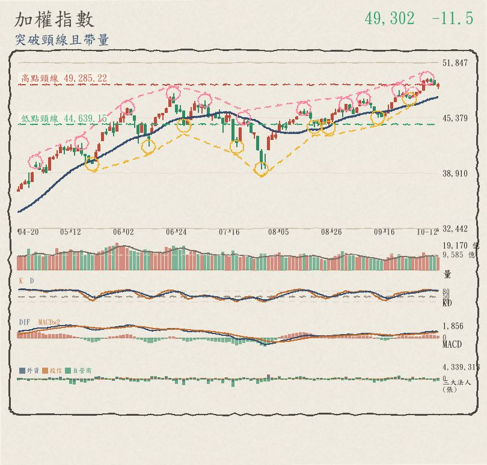
圖說：加權指數日 K（與個股圖相同標記）：黃圈＝轉折低點、粉圈＝轉折高點、虛線小圈＝還沒確認的轉折、藍線＝月線 MA20、水平虛線＝高點／低點頸線。最後一根是資料日當天。
本區塊為公開資料的技術面觀察，不構成投資建議，
不報牌、不預測、不下買賣決策。成交金額為集中市場總成交金額（含 ETF／權證），
與頁首摘要的「上市個股成交金額」口徑不同。標籤是統計，不是評分、也不是推薦。
上市 vs 上櫃（同期快篩）
加權 -0.02% vs 櫃買 +0.28%（方向相反，大小型股背離） → 方向相反（大小型股背離）
（兩個市場分開寫，不合併成一個數字；櫃買為 TPEX 公開資料）
櫃買歷史：TPEX 逐日回補 130 根；來源：櫃買中心 www/zh-tw/indexInfo/sectinx（逐日，官方；OpenAPI tpex_index 只回當月）
（TPEX OpenAPI 只回當月，故逐日回補；歷史不足就不算該條均線並標「資料不足」，不用錯數字）
近 20 個交易日大盤狀態回溯（最新在上）（點開看逐日主狀態／量比／量價象限）
用同一支程式回算最近 20 個交易日（主狀態 S1~S8 與量比 20 皆為當日收盤當時的判定，
不是事後調整）；量比 20 未公布的日子寫「—」。
好條件最多的（前 10）
不好條件最多的（前 10）
好條件（8 項）：站上月線、月線向上、底底高、頭頭高、突破頸線、相對大盤強、外資買超、量價攻擊（收紅＋大量）。
不好條件（8 項）：跌破前低、今日下跌、相對大盤弱、在月線之下、量增下跌（出貨）、外資賣超、月線下彎、收盤跌破前一日低點。
兩邊都是同一組資料（日線結構＋當日收盤量價籌碼）算出來的「符合項目數」，只是方向相反；
條件數不是評分、也不是推薦，不構成投資建議。
上升趨勢：底底高 ＋ 頭頭高（14 上市 10／上櫃 4）
量價攻擊（收紅＋大量）（20 上市 15／上櫃 5）
逐檔分析（70 檔）
區間或轉弱 成交金額 596 億・全榜第 1 名（上市第 1 名）
好條件 3/8：站上月線、月線向上、突破頸線
不好條件 5/8：今日下跌、相對大盤弱、量增下跌（出貨）、外資賣超、收盤跌破前一日低點
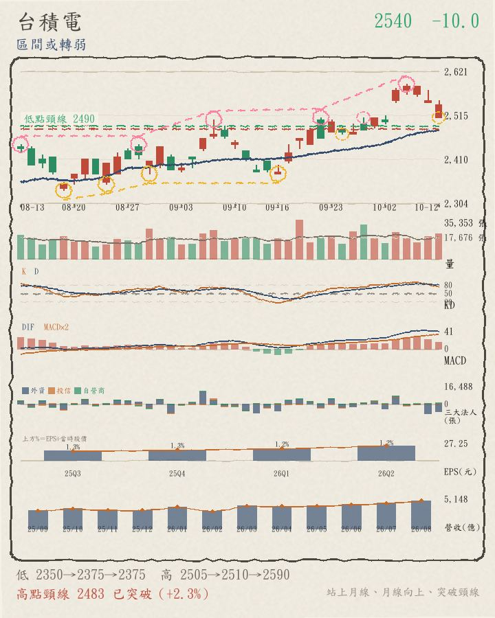
今天帶量收黑、站上月線 2480.25，已站上高點頸線 2483，轉折還沒走出明顯方向。
- 月線位置：收盤 2540 在月線 2480.25 之上；5 日線 2567 也在月線之上（短均在上）；月線向上、5 日線向上
- 量能：成交量是 20 日均量的 1.17 倍，比 20 日均量大不少；收黑卻量增，量價背離
- 關鍵價位：高點頸線 2483 已站上；最近轉折高點 2590（低於 1.9%）；最近轉折低點 2375（高於 6.9%）
- 轉折結構：低點 2350、2375、2375 與高點 2505、2510、2590 都沒有明顯遞增，屬於區間震盪或轉弱；還沒確認的轉折低點 09-24 2470、10-12 2510；還沒確認的轉折高點 09-30 2510（圖上虛線小圈）
剛突破前高 成交金額 408.91 億・全榜第 2 名（上市第 2 名）
好條件 5/8：站上月線、頭頭高、突破頸線、相對大盤強、量價攻擊（收紅＋大量）
不好條件 2/8：外資賣超、月線下彎
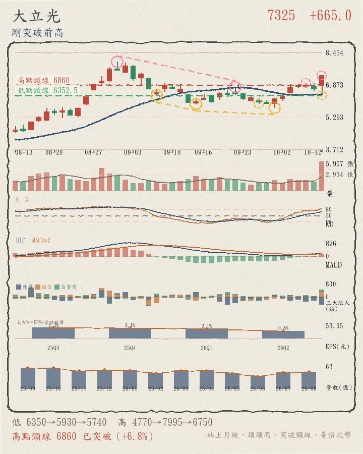
今天帶量收紅、站上月線 6411，已站上高點頸線 6860，高點還在墊高（但底部沒同步墊高）。
- 月線位置：收盤 7325 在月線 6411 之上；5 日線 6883 也在月線之上（短均在上）；月線走平或向下、5 日線向上
- 量能：成交量是 20 日均量的 3.10 倍，比 20 日均量大不少；收紅又量增，量價配合
- 關鍵價位：高點頸線 6860 已站上；最近轉折高點 6750（高於 8.5%）；最近轉折低點 5740（高於 27.6%）
- 轉折結構：高點 4770、7995、6750 墊高 8.5%（頭頭高），但低點 6350、5930、5740 沒有同步墊高；還沒確認的轉折低點 09-29 5940、10-12 6355；還沒確認的轉折高點 10-07 6970、10-12 7325（圖上虛線小圈）
底部墊高、未過前高 成交金額 362.42 億・全榜第 3 名（上市第 3 名）
好條件 2/8：月線向上、底底高
不好條件 7/8：跌破前低、今日下跌、相對大盤弱、在月線之下、量增下跌（出貨）、外資賣超、收盤跌破前一日低點
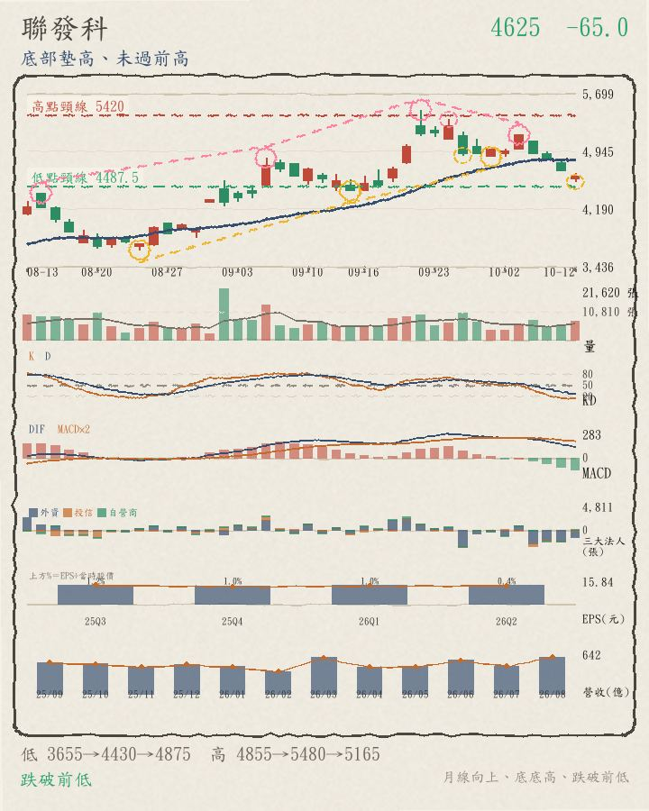
今天帶量收黑、跌破月線 4834.5，跌破前一個轉折低點（高點頸線 5420 還在收盤上方），底部還在墊高（但高點沒同步創高）。
- 月線位置：收盤 4625 在月線 4834.5 之下；5 日線 4847 也在月線之上（短均在上）；月線向上、5 日線走平或向下
- 量能：成交量是 20 日均量的 1.15 倍，比 20 日均量大不少；收黑卻量增，量價背離
- 關鍵價位：高點頸線 5420 還沒突破、還在收盤上方 14.7%；最近轉折高點 5165（低於 10.5%）；最近轉折低點 4875（低於 5.1%）
- 轉折結構：低點 3655、4430、4875 墊高 33.4%（底底高），但高點 4855、5480、5165 沒有同步創高；還沒確認的轉折低點 09-29 4890、10-12 4545；還沒確認的轉折高點 09-24 5360（圖上虛線小圈）
高點墊高、底部不穩 成交金額 226.83 億・全榜第 4 名（上市第 4 名）
好條件 3/8：站上月線、月線向上、頭頭高
不好條件 5/8：今日下跌、相對大盤弱、量增下跌（出貨）、外資賣超、收盤跌破前一日低點
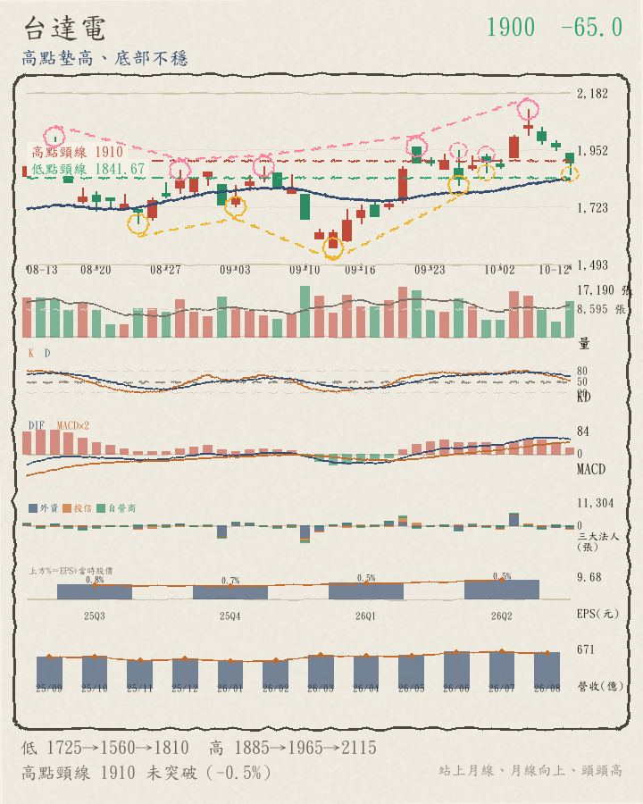
今天帶量收黑、站上月線 1836.25，離高點頸線 1910 還差 0.5%，高點還在墊高（但底部沒同步墊高）。
- 月線位置：收盤 1900 在月線 1836.25 之上；5 日線 1982 也在月線之上（短均在上）；月線向上、5 日線向上
- 量能：成交量是 20 日均量的 1.09 倍，比 20 日均量大一些；收黑卻量增，量價背離
- 關鍵價位：高點頸線 1910 還沒突破，差 0.5%；最近轉折高點 2115（低於 10.2%）；最近轉折低點 1810（高於 5.0%）
- 轉折結構：高點 1885、1965、2115 墊高 12.2%（頭頭高），但低點 1725、1560、1810 沒有同步墊高；還沒確認的轉折低點 10-01 1860、10-12 1855；還沒確認的轉折高點 09-29 1950、10-01 1935（圖上虛線小圈）
剛突破前高 成交金額 220.31 億・全榜第 5 名（上市第 5 名）
好條件 4/8：站上月線、月線向上、頭頭高、突破頸線
不好條件 4/8：今日下跌、相對大盤弱、外資賣超、收盤跌破前一日低點
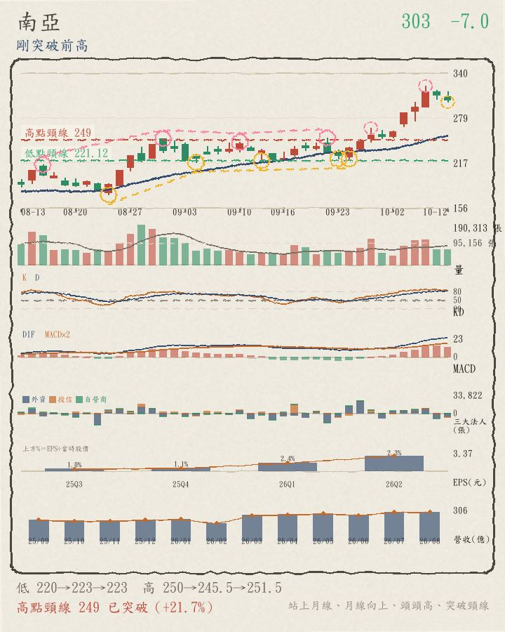
今天收黑、站上月線 254.55，已站上高點頸線 249，高點還在墊高（但底部沒同步墊高）。
- 月線位置：收盤 303 在月線 254.55 之上；5 日線 301.2 也在月線之上（短均在上）；月線向上、5 日線向上
- 量能：成交量是 20 日均量的 1.00 倍，跟 20 日均量差不多
- 關鍵價位：高點頸線 249 已站上；最近轉折高點 251.5（高於 20.5%）；最近轉折低點 223（高於 35.9%）
- 轉折結構：高點 250、245.5、251.5 墊高 28.0%（頭頭高），但低點 220.5、223、223 沒有同步墊高；還沒確認的轉折低點 10-12 300；還沒確認的轉折高點 09-30 265、10-07 322（圖上虛線小圈）
剛突破前高 成交金額 165.27 億・全榜第 6 名（上市第 6 名）
好條件 4/8：站上月線、月線向上、頭頭高、相對大盤強
不好條件 1/8：外資賣超
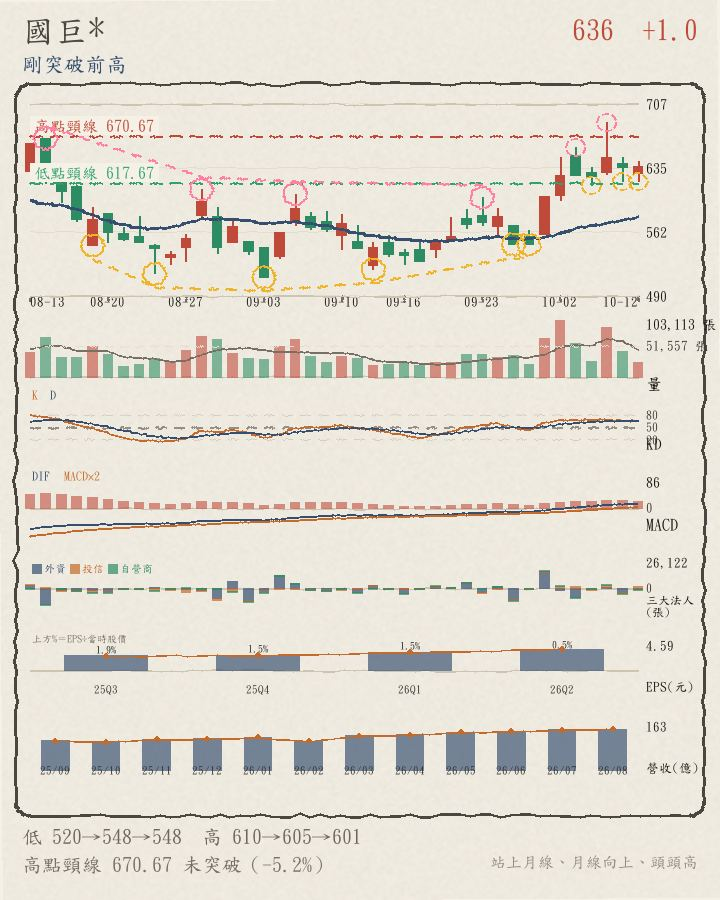
今天收紅、但成交量比平均少、站上月線 579.35，離高點頸線 670.67 還差 5.2%，高點還在墊高（但底部沒同步墊高）。
- 月線位置：收盤 636 在月線 579.35 之上；5 日線 633.8 也在月線之上（短均在上）；月線向上、5 日線向上
- 量能：成交量是 20 日均量的 0.64 倍，比 20 日均量少很多；收紅但量縮，量價背離
- 關鍵價位：高點頸線 670.67 還沒突破，差 5.2%；最近轉折高點 601（高於 5.8%）；最近轉折低點 548（高於 16.1%）
- 轉折結構：高點 610、605、601 墊高 14.1%（頭頭高），但低點 520、548、548 沒有同步墊高；還沒確認的轉折低點 10-08 619、10-12 619；還沒確認的轉折高點 10-05 658、10-07 686（圖上虛線小圈）
剛突破前高 成交金額 152.12 億・全榜第 7 名（上市第 7 名）
好條件 6/8：站上月線、月線向上、頭頭高、相對大盤強、外資買超、量價攻擊（收紅＋大量）
不好條件 0/8：無
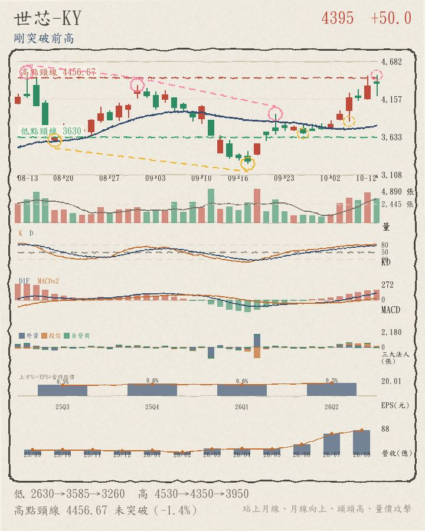
今天帶量收紅、站上月線 3790，離高點頸線 4456.67 還差 1.4%，高點還在墊高（但底部沒同步墊高）。
- 月線位置：收盤 4395 在月線 3790 之上；5 日線 4212 也在月線之上（短均在上）；月線向上、5 日線向上
- 量能：成交量是 20 日均量的 1.42 倍，比 20 日均量大不少；收紅又量增，量價配合
- 關鍵價位：高點頸線 4456.67 還沒突破，差 1.4%；最近轉折高點 3950（高於 11.3%）；最近轉折低點 3260（高於 34.8%）
- 轉折結構：高點 4530、4350、3950 墊高 13.7%（頭頭高），但低點 2630、3585、3260 沒有同步墊高；還沒確認的轉折低點 09-29 3675、10-06 3850；還沒確認的轉折高點 10-12 4490（圖上虛線小圈）
剛突破前高 成交金額 148.12 億・全榜第 8 名（上市第 8 名）
好條件 3/8：站上月線、月線向上、頭頭高
不好條件 3/8：今日下跌、相對大盤弱、外資賣超
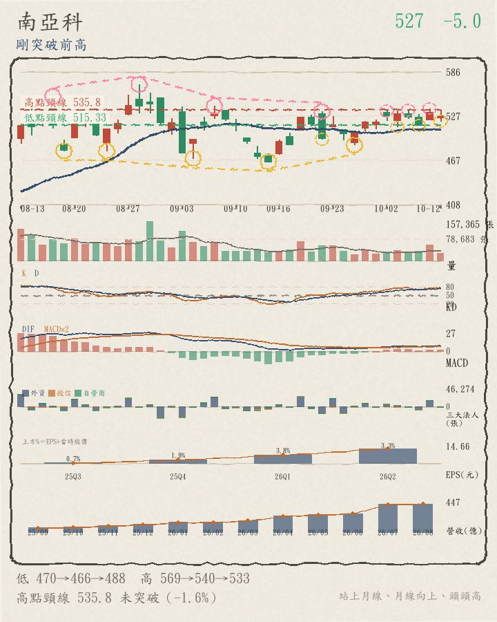
今天收黑、成交量也比平均少、站上月線 509.05，離高點頸線 535.8 還差 1.6%，高點還在墊高（但底部沒同步墊高）。
- 月線位置：收盤 527 在月線 509.05 之上；5 日線 525.6 也在月線之上（短均在上）；月線向上、5 日線向上
- 量能：成交量是 20 日均量的 0.67 倍，比 20 日均量少很多
- 關鍵價位：高點頸線 535.8 還沒突破，差 1.6%；最近轉折高點 533（低於 1.1%）；最近轉折低點 488（高於 8.0%）
- 轉折結構：高點 569、540、533 墊高 0.8%（頭頭高），但低點 470、465.5、488 沒有同步墊高；還沒確認的轉折低點 10-07 514、10-12 520；還沒確認的轉折高點 10-06 535、10-08 537（圖上虛線小圈）
高點墊高、底部不穩 成交金額 143.17 億・全榜第 9 名（上市第 9 名）
好條件 4/8：站上月線、月線向上、頭頭高、突破頸線
不好條件 4/8：今日下跌、相對大盤弱、量增下跌（出貨）、外資賣超
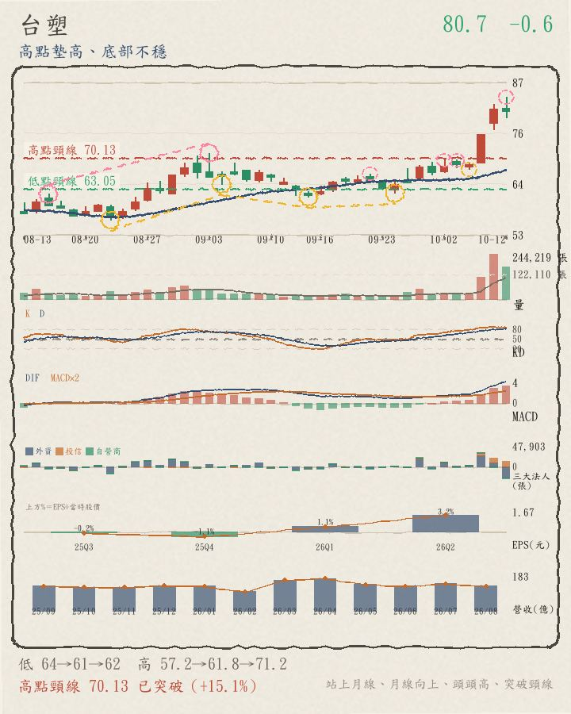
今天帶量收黑、站上月線 67.32，已站上高點頸線 70.13，高點還在墊高（但底部沒同步墊高）。
- 月線位置：收盤 80.7 在月線 67.32 之上；5 日線 74.9 也在月線之上（短均在上）；月線向上、5 日線向上
- 量能：成交量是 20 日均量的 4.45 倍，比 20 日均量大不少；收黑卻量增，量價背離
- 關鍵價位：高點頸線 70.13 已站上；最近轉折高點 71.2（高於 13.3%）；最近轉折低點 62（高於 30.2%）
- 轉折結構：高點 57.2、61.8、71.2 墊高 24.5%（頭頭高），但低點 64.1、61.2、62 沒有同步墊高；還沒確認的轉折低點 10-06 67.5；還沒確認的轉折高點 10-05 69.6、10-12 84（圖上虛線小圈）
上升趨勢（底底高＋頭頭高） 成交金額 143.16 億・全榜第 10 名（上市第 10 名）
好條件 5/8：站上月線、月線向上、底底高、頭頭高、外資買超
不好條件 4/8：今日下跌、相對大盤弱、量增下跌（出貨）、收盤跌破前一日低點
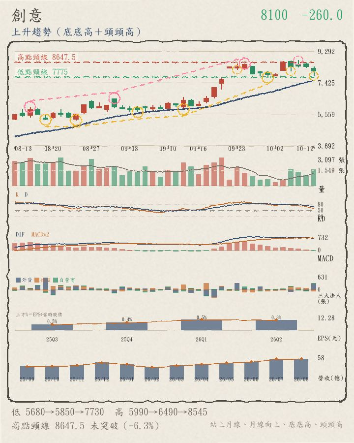
今天帶量收黑、站上月線 7558，離高點頸線 8647.5 還差 6.3%，轉折結構仍是底底高＋頭頭高。
- 月線位置：收盤 8100 在月線 7558 之上；5 日線 8379 也在月線之上（短均在上）；月線向上、5 日線向上
- 量能：成交量是 20 日均量的 1.21 倍，比 20 日均量大不少；收黑卻量增，量價背離
- 關鍵價位：高點頸線 8647.5 還沒突破，差 6.3%；最近轉折高點 8545（低於 5.2%）；最近轉折低點 7730（高於 4.8%）
- 轉折結構：低點 5680、5850、7730 一路墊高 36.1%、高點 5990、6490、8545 也一路墊高 42.7%，是底底高＋頭頭高；還沒確認的轉折低點 10-06 8110、10-12 7820；還沒確認的轉折高點 10-07 8750（圖上虛線小圈）
底部墊高、未過前高 成交金額 142.09 億・全榜第 11 名（上市第 11 名）
好條件 2/8：月線向上、底底高
不好條件 6/8：跌破前低、今日下跌、相對大盤弱、在月線之下、外資賣超、收盤跌破前一日低點
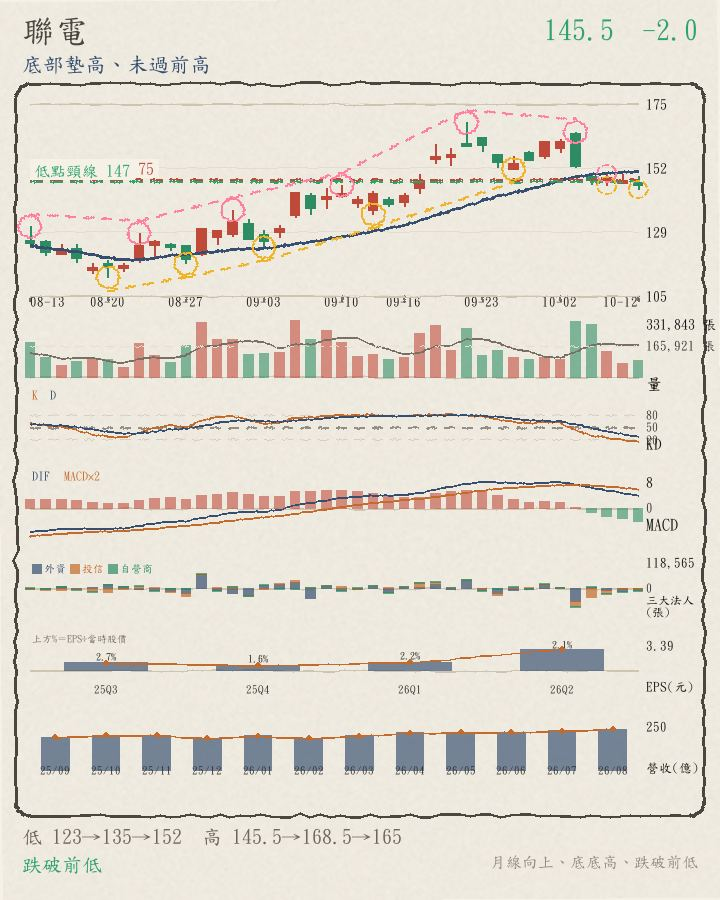
今天收黑、成交量也比平均少、跌破月線 150.65，跌破前一個轉折低點（高點頸線 147.75 還在收盤上方），底部還在墊高（但高點沒同步創高）。
- 月線位置：收盤 145.5 在月線 150.65 之下；5 日線 148.3 也在月線之下（短均在下）；月線向上、5 日線走平或向下
- 量能：成交量是 20 日均量的 0.56 倍，比 20 日均量少很多
- 關鍵價位：高點頸線 147.75 還沒突破、還在收盤上方 1.5%；最近轉折高點 165（低於 11.8%）；最近轉折低點 151.5（低於 4.0%）
- 轉折結構：低點 123、135、151.5 墊高 23.2%（底底高），但高點 145.5、168.5、165 沒有同步創高；還沒確認的轉折低點 10-07 145.5、10-12 144；還沒確認的轉折高點 10-07 150（圖上虛線小圈）
剛突破前高 成交金額 140.15 億・全榜第 12 名（上市第 12 名）
好條件 5/8：站上月線、月線向上、頭頭高、相對大盤強、量價攻擊（收紅＋大量）
不好條件 1/8：外資賣超
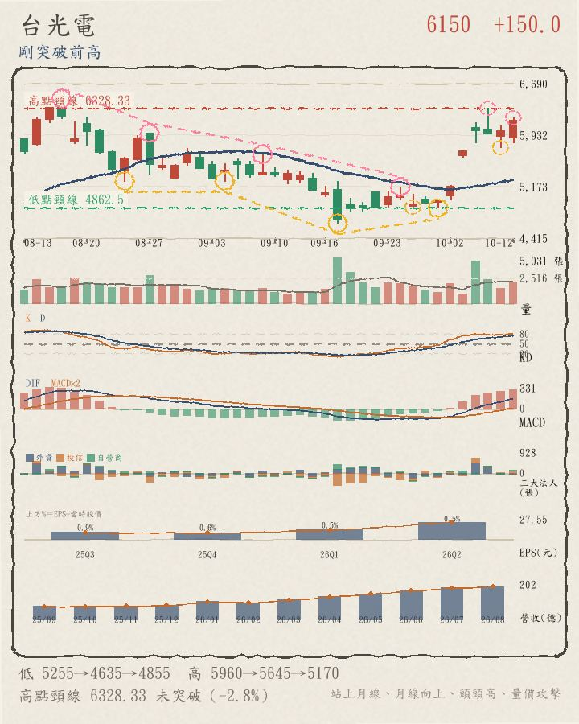
今天帶量收紅、站上月線 5275.25，離高點頸線 6328.33 還差 2.8%，高點還在墊高（但底部沒同步墊高）。
- 月線位置：收盤 6150 在月線 5275.25 之上；5 日線 5959 也在月線之上（短均在上）；月線向上、5 日線向上
- 量能：成交量是 20 日均量的 1.13 倍，比 20 日均量大一些；收紅又量增，量價配合
- 關鍵價位：高點頸線 6328.33 還沒突破，差 2.8%；最近轉折高點 5170（高於 19.0%）；最近轉折低點 4855（高於 26.7%）
- 轉折結構：高點 5960、5645、5170 墊高 22.3%（頭頭高），但低點 5255、4635、4855 沒有同步墊高；還沒確認的轉折低點 09-29 4870、10-08 5745；還沒確認的轉折高點 10-07 6325、10-12 6190（圖上虛線小圈）
底部墊高、未過前高 成交金額 128.16 億・全榜第 13 名（上市第 13 名）
好條件 1/8：底底高
不好條件 8/8：跌破前低、今日下跌、相對大盤弱、在月線之下、量增下跌（出貨）、外資賣超、月線下彎、收盤跌破前一日低點
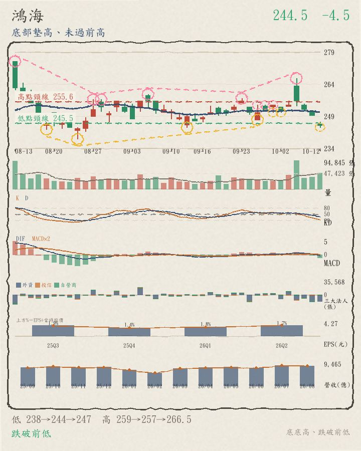
今天帶量收黑、跌破月線 250.75，跌破前一個轉折低點（高點頸線 255.6 還在收盤上方），底部還在墊高（但高點沒同步創高）。
- 月線位置：收盤 244.5 在月線 250.75 之下；5 日線 251.1 也在月線之上（短均在上）；月線走平或向下、5 日線走平或向下
- 量能：成交量是 20 日均量的 1.60 倍，比 20 日均量大不少；收黑卻量增，量價背離
- 關鍵價位：高點頸線 255.6 還沒突破、還在收盤上方 4.3%；最近轉折高點 266.5（低於 8.3%）；最近轉折低點 247（低於 1.0%）
- 轉折結構：低點 238、243.5、247 墊高 3.8%（底底高），但高點 259、257、266.5 沒有同步創高；還沒確認的轉折低點 10-02 250.5、10-12 243.5；還沒確認的轉折高點 09-30 254、10-01 254（圖上虛線小圈）
底部墊高、突破前高 成交金額 127.25 億・全榜第 14 名（上市第 14 名）
好條件 7/8：站上月線、月線向上、底底高、頭頭高、相對大盤強、外資買超、量價攻擊（收紅＋大量）
不好條件 0/8：無
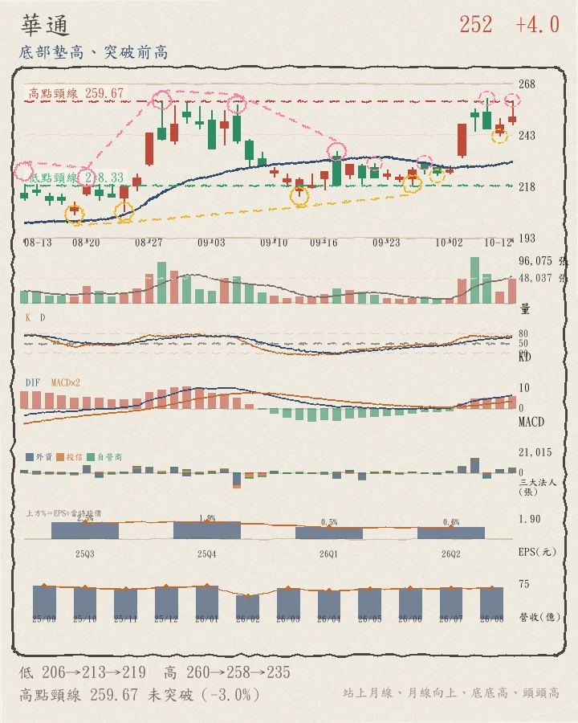
今天帶量收紅、站上月線 229.925，離高點頸線 259.67 還差 3.0%，轉折結構仍是底底高＋頭頭高。
- 月線位置：收盤 252 在月線 229.925 之上；5 日線 249.3 也在月線之上（短均在上）；月線向上、5 日線向上
- 量能：成交量是 20 日均量的 2.16 倍，比 20 日均量大不少；收紅又量增，量價配合
- 關鍵價位：高點頸線 259.67 還沒突破，差 3.0%；最近轉折高點 235（高於 7.2%）；最近轉折低點 219（高於 15.1%）
- 轉折結構：低點 205.5、213、219 一路墊高 6.6%、高點 260、258、235 也一路墊高 11.1%，是底底高＋頭頭高；還沒確認的轉折低點 10-01 223、10-08 242.5；還沒確認的轉折高點 10-07 261、10-12 260（圖上虛線小圈）
剛突破前高 成交金額 124.33 億・全榜第 15 名（上市第 15 名）
好條件 4/8：站上月線、月線向上、頭頭高、突破頸線
不好條件 4/8：今日下跌、相對大盤弱、量增下跌（出貨）、外資賣超
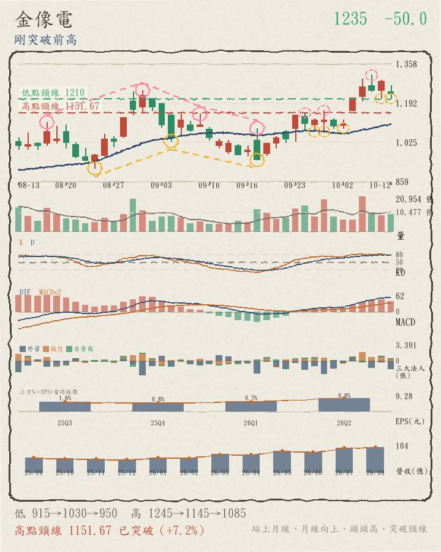
今天帶量收黑、站上月線 1101.95，已站上高點頸線 1151.67，高點還在墊高（但底部沒同步墊高）。
- 月線位置：收盤 1235 在月線 1101.95 之上；5 日線 1248 也在月線之上（短均在上）；月線向上、5 日線向上
- 量能：成交量是 20 日均量的 1.06 倍，比 20 日均量大一些；收黑卻量增，量價背離
- 關鍵價位：高點頸線 1151.67 已站上；最近轉折高點 1085（高於 13.8%）；最近轉折低點 950（高於 30.0%）
- 轉折結構：高點 1245、1145、1085 墊高 20.7%（頭頭高），但低點 915、1030、950 沒有同步墊高；還沒確認的轉折低點 10-08 1210、10-12 1210；還沒確認的轉折高點 09-30 1160、10-07 1310（圖上虛線小圈）
底部墊高、突破前高 成交金額 122.9 億・全榜第 16 名（上市第 16 名）
好條件 4/8：站上月線、月線向上、底底高、頭頭高
不好條件 4/8：今日下跌、相對大盤弱、外資賣超、收盤跌破前一日低點
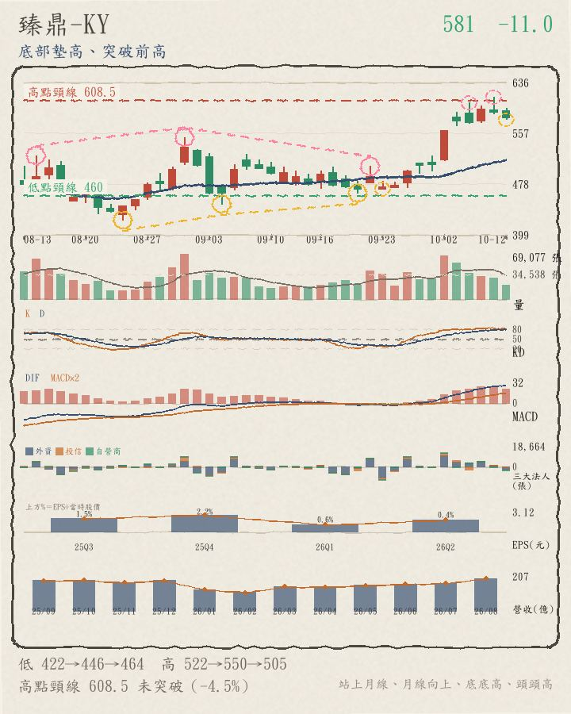
今天收黑、成交量也比平均少、站上月線 515.05，離高點頸線 608.5 還差 4.5%，轉折結構仍是底底高＋頭頭高。
- 月線位置：收盤 581 在月線 515.05 之上；5 日線 583.6 也在月線之上（短均在上）；月線向上、5 日線向上
- 量能：成交量是 20 日均量的 0.68 倍，比 20 日均量少很多
- 關鍵價位：高點頸線 608.5 還沒突破，差 4.5%；最近轉折高點 505（高於 15.0%）；最近轉折低點 463.5（高於 25.4%）
- 轉折結構：低點 421.5、446.5、463.5 一路墊高 10.0%、高點 522、550、505 也一路墊高 21.4%，是底底高＋頭頭高；還沒確認的轉折低點 09-23 470、10-12 578；還沒確認的轉折高點 10-06 604、10-08 613（圖上虛線小圈）
上升趨勢（底底高＋頭頭高） 成交金額 120.35 億・全榜第 17 名（上市第 17 名）
好條件 8/8：站上月線、月線向上、底底高、頭頭高、突破頸線、相對大盤強、外資買超、量價攻擊（收紅＋大量）
不好條件 0/8：無
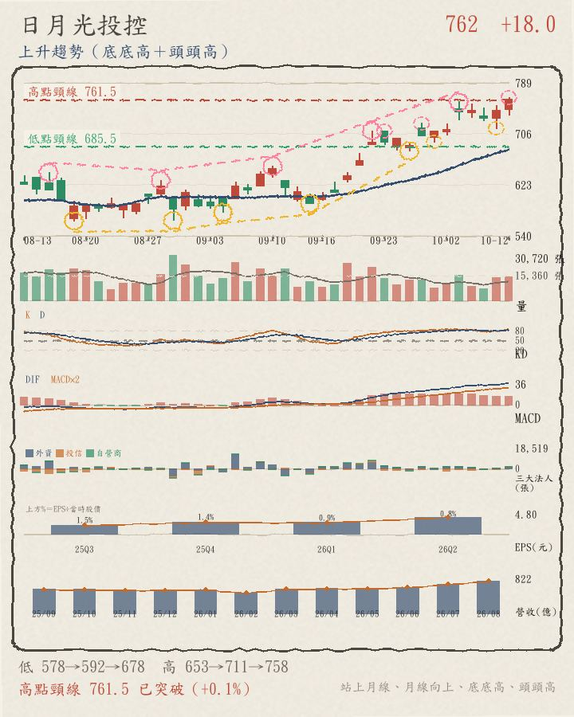
今天帶量收紅、站上月線 680.7，已站上高點頸線 761.5，轉折結構仍是底底高＋頭頭高。
- 月線位置：收盤 762 在月線 680.7 之上；5 日線 744.8 也在月線之上（短均在上）；月線向上、5 日線向上
- 量能：成交量是 20 日均量的 1.12 倍，比 20 日均量大一些；收紅又量增，量價配合
- 關鍵價位：高點頸線 761.5 已站上；最近轉折高點 758（高於 0.5%）；最近轉折低點 678（高於 12.4%）
- 轉折結構：低點 578、592、678 一路墊高 17.3%、高點 653、711、758 也一路墊高 16.1%，是底底高＋頭頭高；還沒確認的轉折低點 10-01 693、10-08 715；還沒確認的轉折高點 09-30 723、10-12 765（圖上虛線小圈）
區間或轉弱 成交金額 113.36 億・全榜第 18 名（上市第 18 名）
好條件 4/8：站上月線、相對大盤強、外資買超、量價攻擊（收紅＋大量）
不好條件 1/8：月線下彎
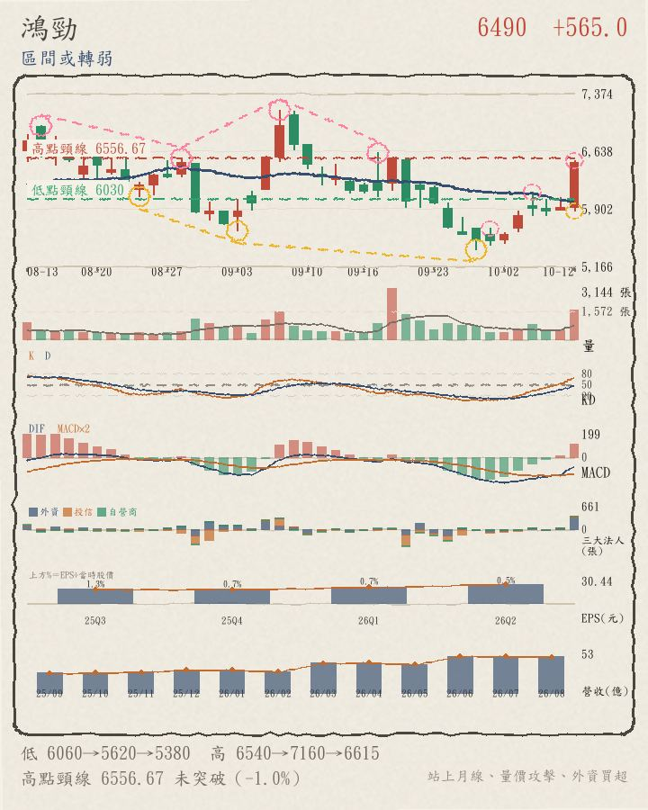
今天帶量收紅、站上月線 6000.25，離高點頸線 6556.67 還差 1.0%，轉折還沒走出明顯方向。
- 月線位置：收盤 6490 在月線 6000.25 之上；5 日線 6004 也在月線之上（短均在上）；月線走平或向下、5 日線向上
- 量能：成交量是 20 日均量的 2.19 倍，比 20 日均量大不少；收紅又量增，量價配合
- 關鍵價位：高點頸線 6556.67 還沒突破，差 1.0%；最近轉折高點 6615（低於 1.9%）；最近轉折低點 5380（高於 20.6%）
- 轉折結構：低點 6060、5620、5380 與高點 6540、7160、6615 都沒有明顯遞增，屬於區間震盪或轉弱；還沒確認的轉折低點 10-12 5870；還沒確認的轉折高點 10-06 6115、10-12 6515（圖上虛線小圈）
高點墊高、底部不穩 成交金額 111.07 億・全榜第 19 名（上市第 19 名）
好條件 5/8：站上月線、月線向上、頭頭高、突破頸線、外資買超
不好條件 2/8：今日下跌、相對大盤弱
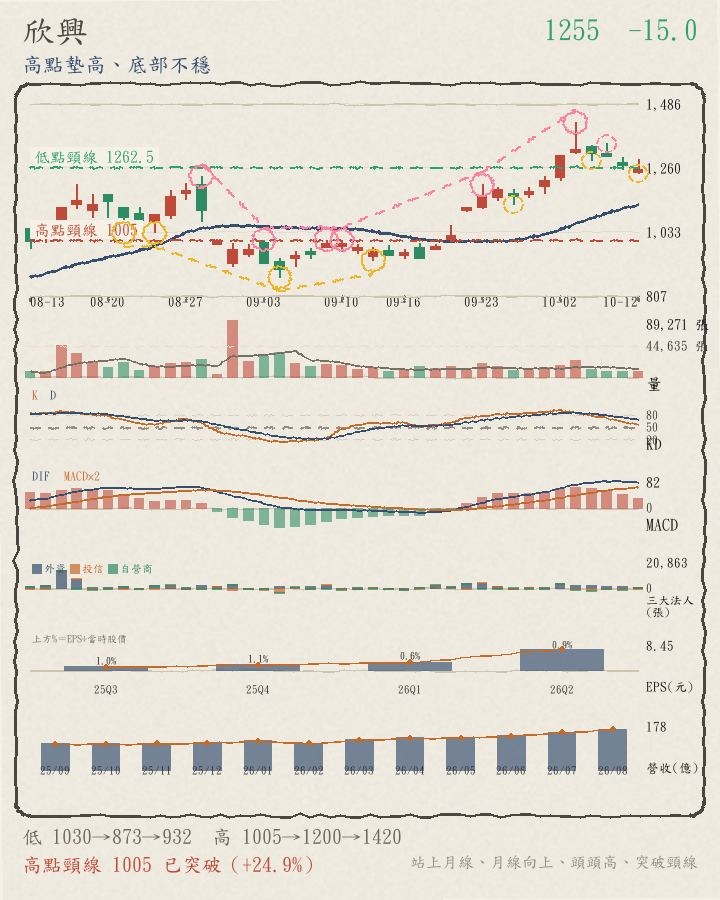
今天收黑、成交量也比平均少、站上月線 1129.2，已站上高點頸線 1005，高點還在墊高（但底部沒同步墊高）。
- 月線位置：收盤 1255 在月線 1129.2 之上；5 日線 1293 也在月線之上（短均在上）；月線向上、5 日線向上
- 量能：成交量是 20 日均量的 0.62 倍，比 20 日均量少很多
- 關鍵價位：高點頸線 1005 已站上；最近轉折高點 1420（低於 11.6%）；最近轉折低點 932（高於 34.7%）
- 轉折結構：高點 1005、1200、1420 墊高 41.3%（頭頭高），但低點 1030、873、932 沒有同步墊高；還沒確認的轉折低點 10-06 1285、10-12 1240；還沒確認的轉折高點 10-07 1345（圖上虛線小圈）
高點墊高、底部不穩 成交金額 109.66 億・全榜第 20 名（上市第 20 名）
好條件 3/8：站上月線、月線向上、頭頭高
不好條件 4/8：今日下跌、相對大盤弱、外資賣超、收盤跌破前一日低點
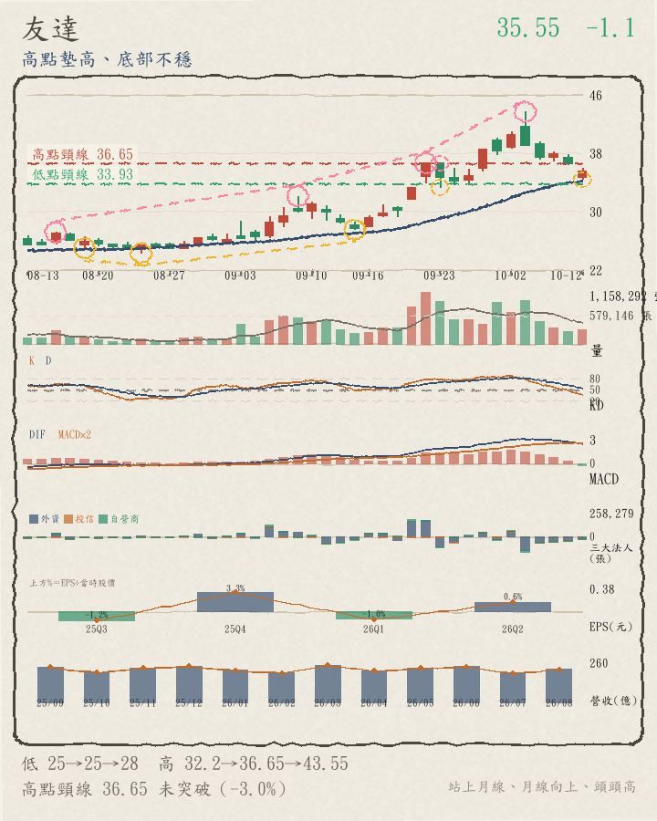
今天收黑、成交量也比平均少、站上月線 34.28，離高點頸線 36.65 還差 3.0%，高點還在墊高（但底部沒同步墊高）。
- 月線位置：收盤 35.55 在月線 34.28 之上；5 日線 37.32 也在月線之上（短均在上）；月線向上、5 日線向上
- 量能：成交量是 20 日均量的 0.55 倍，比 20 日均量少很多
- 關鍵價位：高點頸線 36.65 還沒突破，差 3.0%；最近轉折高點 43.55（低於 18.4%）；最近轉折低點 27.75（高於 28.1%）
- 轉折結構：高點 32.2、36.65、43.55 墊高 35.2%（頭頭高），但低點 25.25、24.6、27.75 沒有同步墊高；還沒確認的轉折低點 09-23 33.4、10-12 34.45；還沒確認的轉折高點 09-23 36.65（圖上虛線小圈）
區間或轉弱 成交金額 107.99 億・全榜第 22 名（上市第 21 名）
好條件 0/8：無
不好條件 8/8：跌破前低、今日下跌、相對大盤弱、在月線之下、量增下跌（出貨）、外資賣超、月線下彎、收盤跌破前一日低點
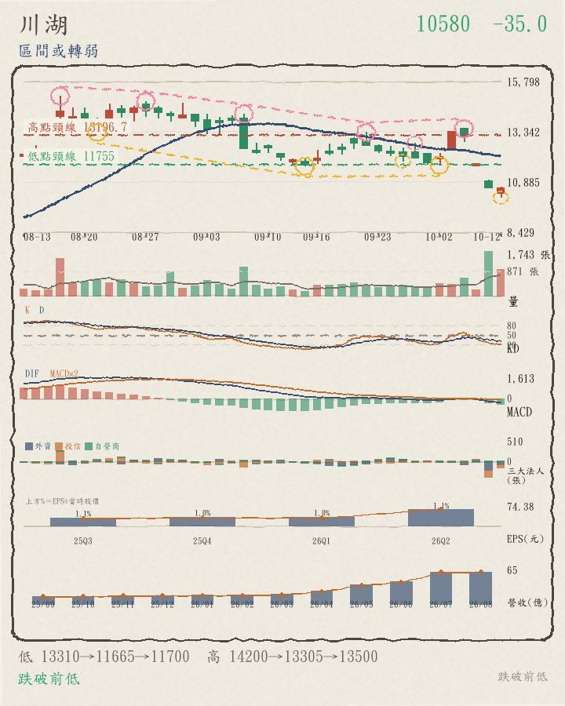
今天帶量收黑、跌破月線 12151，跌破前一個轉折低點（高點頸線 13196.7 還在收盤上方），轉折還沒走出明顯方向。
- 月線位置：收盤 10580 在月線 12151 之下；5 日線 11888 也在月線之下（短均在下）；月線走平或向下、5 日線走平或向下
- 量能：成交量是 20 日均量的 2.31 倍，比 20 日均量大不少；收黑卻量增，量價背離
- 關鍵價位：高點頸線 13196.7 還沒突破、還在收盤上方 19.8%；最近轉折高點 13500（低於 21.6%）；最近轉折低點 11700（低於 9.6%）
- 轉折結構：低點 13310、11665、11700 與高點 14200、13305、13500 都沒有明顯遞增，屬於區間震盪或轉弱；還沒確認的轉折低點 09-29 11900、10-12 10120；還沒確認的轉折高點 09-30 12785（圖上虛線小圈）
底部墊高、突破前高 成交金額 100.1 億・全榜第 24 名（上市第 22 名）
好條件 8/8：站上月線、月線向上、底底高、頭頭高、突破頸線、相對大盤強、外資買超、量價攻擊（收紅＋大量）
不好條件 0/8：無
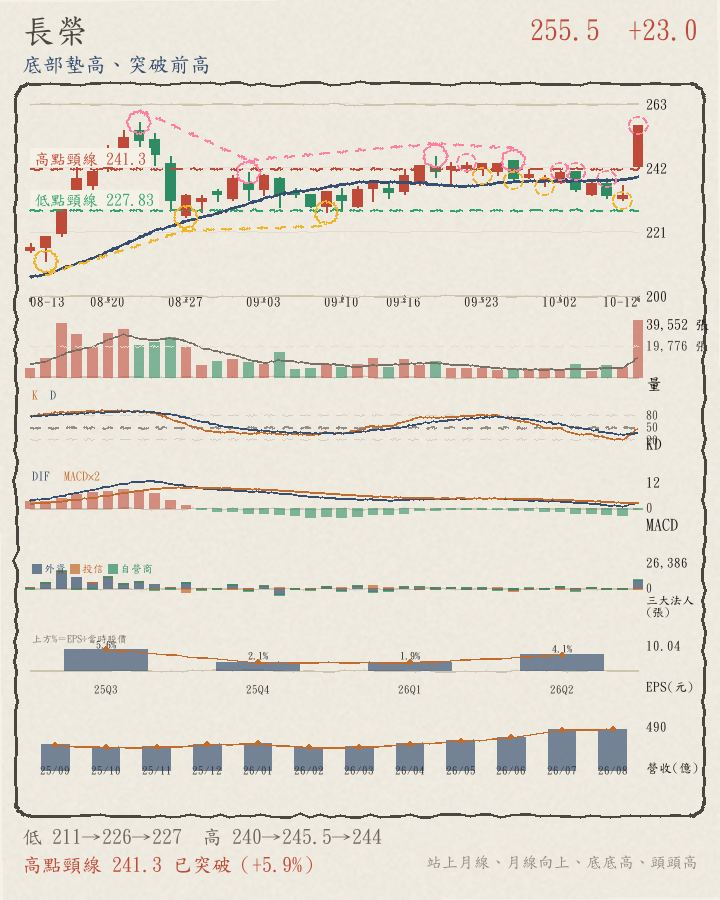
今天帶量收紅、站上月線 238.775，已站上高點頸線 241.3，轉折結構仍是底底高＋頭頭高。
- 月線位置：收盤 255.5 在月線 238.775 之上；5 日線 238.3 也在月線之下（短均在下）；月線向上、5 日線走平或向下
- 量能：成交量是 20 日均量的 5.38 倍，比 20 日均量大不少；收紅又量增，量價配合
- 關鍵價位：高點頸線 241.3 已站上；最近轉折高點 244（高於 4.7%）；最近轉折低點 227（高於 12.6%）
- 轉折結構：低點 211、225.5、227 一路墊高 7.6%、高點 240、245.5、244 也一路墊高 4.7%，是底底高＋頭頭高；還沒確認的轉折低點 10-01 235.5、10-08 231；還沒確認的轉折高點 10-07 238、10-12 255.5（圖上虛線小圈）
剛突破前高 成交金額 96.47 億・全榜第 25 名（上市第 23 名）
好條件 6/8：站上月線、月線向上、頭頭高、突破頸線、相對大盤強、量價攻擊（收紅＋大量）
不好條件 1/8：外資賣超
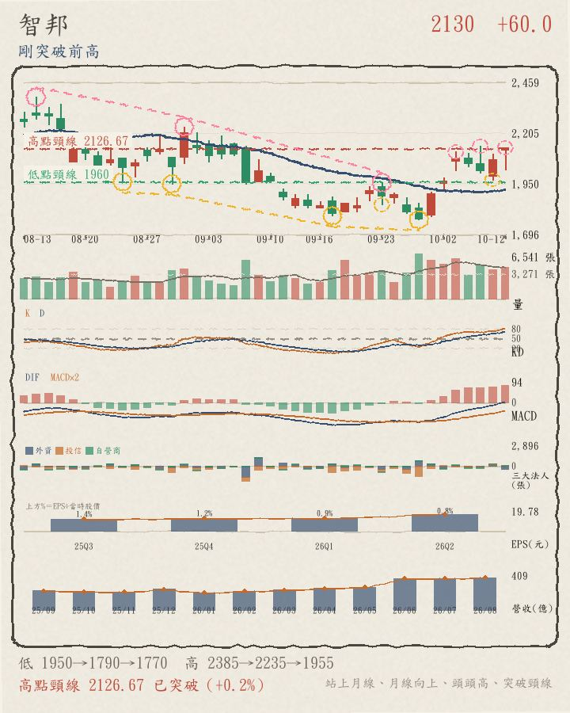
今天帶量收紅、站上月線 1919.5，已站上高點頸線 2126.67，高點還在墊高（但底部沒同步墊高）。
- 月線位置：收盤 2130 在月線 1919.5 之上；5 日線 2068 也在月線之上（短均在上）；月線向上、5 日線向上
- 量能：成交量是 20 日均量的 1.17 倍，比 20 日均量大不少；收紅又量增，量價配合
- 關鍵價位：高點頸線 2126.67 已站上；最近轉折高點 1955（高於 9.0%）；最近轉折低點 1770（高於 20.3%）
- 轉折結構：高點 2385、2235、1955 墊高 9.5%（頭頭高），但低點 1950、1790、1770 沒有同步墊高；還沒確認的轉折低點 09-23 1845、10-08 1970；還沒確認的轉折高點 10-07 2140、10-12 2130（圖上虛線小圈）
底部墊高、突破前高 成交金額 95.71 億・全榜第 26 名（上市第 24 名）
好條件 5/8：站上月線、月線向上、底底高、頭頭高、外資買超
不好條件 2/8：今日下跌、相對大盤弱
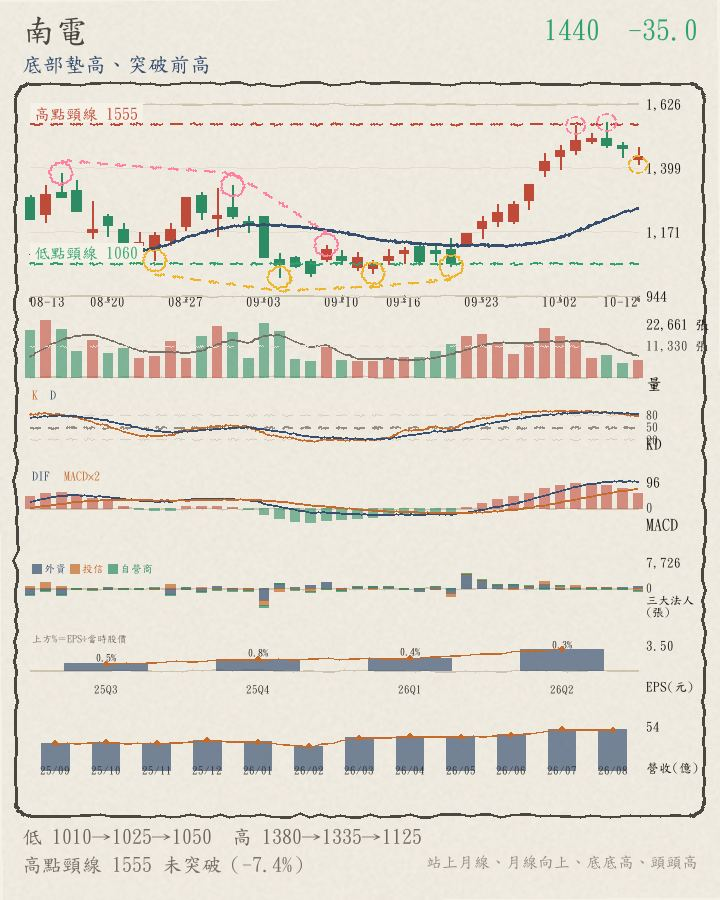
今天收黑、成交量也比平均少、站上月線 1256，離高點頸線 1555 還差 7.4%，轉折結構仍是底底高＋頭頭高。
- 月線位置：收盤 1440 在月線 1256 之上；5 日線 1479 也在月線之上（短均在上）；月線向上、5 日線向上
- 量能：成交量是 20 日均量的 0.62 倍，比 20 日均量少很多
- 關鍵價位：高點頸線 1555 還沒突破，差 7.4%；最近轉折高點 1125（高於 28.0%）；最近轉折低點 1050（高於 37.1%）
- 轉折結構：低點 1010、1025、1050 一路墊高 4.0%、高點 1380、1335、1125 也一路墊高 38.7%，是底底高＋頭頭高；還沒確認的轉折低點 10-12 1410；還沒確認的轉折高點 10-05 1550、10-07 1560（圖上虛線小圈）
底部墊高、突破前高 成交金額 94.34 億・全榜第 27 名（上市第 25 名）
好條件 5/8：站上月線、月線向上、底底高、頭頭高、突破頸線
不好條件 3/8：今日下跌、相對大盤弱、外資賣超
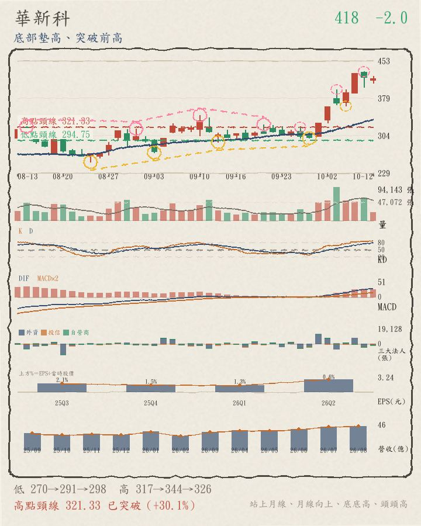
今天收黑、成交量也比平均少、站上月線 335.9，已站上高點頸線 321.33，轉折結構仍是底底高＋頭頭高。
- 月線位置：收盤 418 在月線 335.9 之上；5 日線 404.8 也在月線之上（短均在上）；月線向上、5 日線向上
- 量能：成交量是 20 日均量的 0.62 倍，比 20 日均量少很多
- 關鍵價位：高點頸線 321.33 已站上；最近轉折高點 326（高於 28.2%）；最近轉折低點 298.5（高於 40.0%）
- 轉折結構：低點 270、291、298.5 一路墊高 10.6%、高點 317、344、326 也一路墊高 32.4%，是底底高＋頭頭高；還沒確認的轉折低點 10-06 362.5；還沒確認的轉折高點 10-05 396、10-08 431.5（圖上虛線小圈）
高點墊高、底部不穩 成交金額 93.92 億・全榜第 28 名（上市第 26 名）
好條件 3/8：站上月線、月線向上、頭頭高
不好條件 4/8：今日下跌、相對大盤弱、量增下跌（出貨）、外資賣超
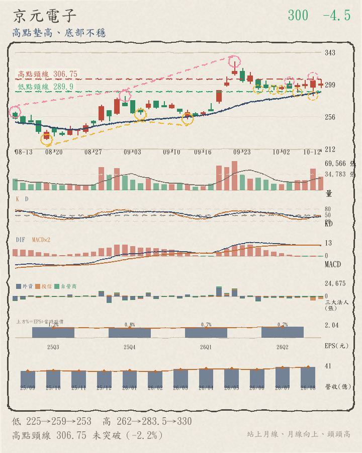
今天帶量收黑、站上月線 289.05，離高點頸線 306.75 還差 2.2%，高點還在墊高（但底部沒同步墊高）。
- 月線位置：收盤 300 在月線 289.05 之上；5 日線 299.2 也在月線之上（短均在上）；月線向上、5 日線向上
- 量能：成交量是 20 日均量的 1.21 倍，比 20 日均量大不少；收黑卻量增，量價背離
- 關鍵價位：高點頸線 306.75 還沒突破，差 2.2%；最近轉折高點 330（低於 9.1%）；最近轉折低點 253（高於 18.6%）
- 轉折結構：高點 262、283.5、330 墊高 26.0%（頭頭高），但低點 225、259、253 沒有同步墊高；還沒確認的轉折低點 10-06 288.5、10-08 284；還沒確認的轉折高點 10-05 303.5、10-08 310（圖上虛線小圈）
剛突破前高 成交金額 81.13 億・全榜第 31 名（上市第 27 名）
好條件 5/8：站上月線、月線向上、頭頭高、相對大盤強、量價攻擊（收紅＋大量）
不好條件 1/8：外資賣超
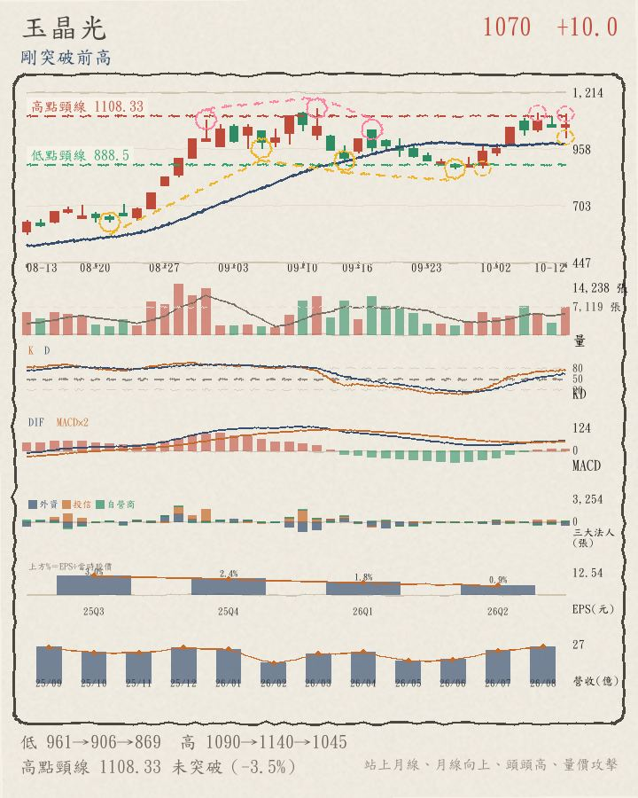
今天帶量收紅、站上月線 981，離高點頸線 1108.33 還差 3.5%，高點還在墊高（但底部沒同步墊高）。
- 月線位置：收盤 1070 在月線 981 之上；5 日線 1063 也在月線之上（短均在上）；月線向上、5 日線向上
- 量能：成交量是 20 日均量的 1.26 倍，比 20 日均量大不少；收紅又量增，量價配合
- 關鍵價位：高點頸線 1108.33 還沒突破，差 3.5%；最近轉折高點 1045（高於 2.4%）；最近轉折低點 869（高於 23.1%）
- 轉折結構：高點 1090、1140、1045 墊高 7.2%（頭頭高），但低點 961、906、869 沒有同步墊高；還沒確認的轉折低點 10-01 871、10-12 1010；還沒確認的轉折高點 10-07 1120、10-12 1115（圖上虛線小圈）
區間或轉弱 成交金額 80.85 億・全榜第 32 名（上市第 28 名）
好條件 2/8：月線向上、外資買超
不好條件 4/8：今日下跌、相對大盤弱、在月線之下、收盤跌破前一日低點
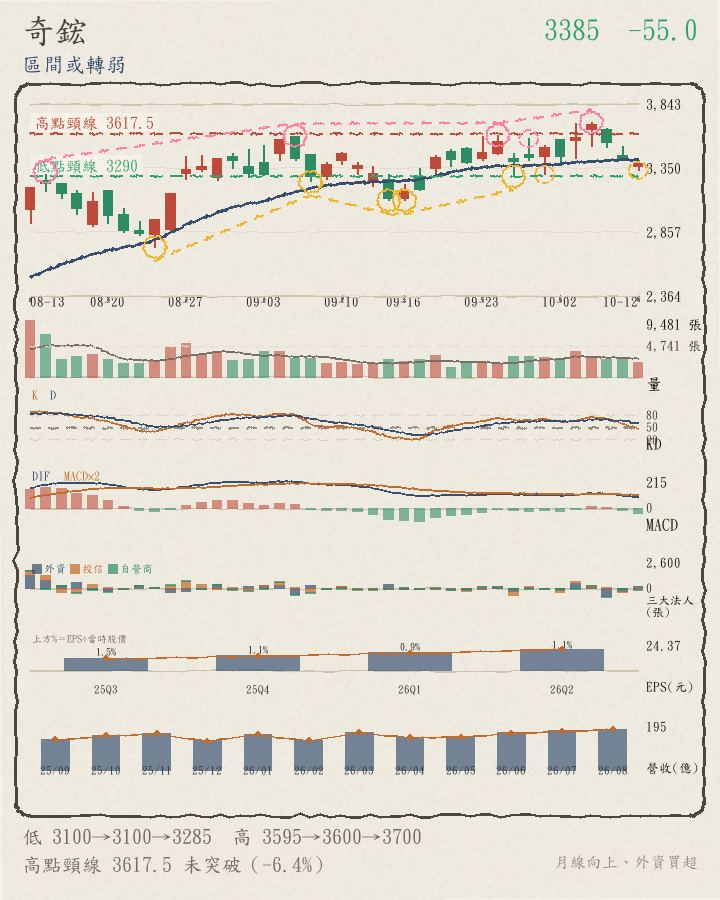
今天收黑、成交量也比平均少、跌破月線 3415，離高點頸線 3617.5 還差 6.4%，轉折還沒走出明顯方向。
- 月線位置：收盤 3385 在月線 3415 之下；5 日線 3528 也在月線之上（短均在上）；月線向上、5 日線向上
- 量能：成交量是 20 日均量的 0.86 倍，比 20 日均量少一些
- 關鍵價位：高點頸線 3617.5 還沒突破，差 6.4%；最近轉折高點 3700（低於 8.5%）；最近轉折低點 3285（高於 3.0%）
- 轉折結構：低點 3100、3100、3285 與高點 3595、3600、3700 都沒有明顯遞增，屬於區間震盪或轉弱；還沒確認的轉折低點 10-01 3300、10-12 3330；還沒確認的轉折高點 09-30 3575（圖上虛線小圈）
底部墊高、未過前高 成交金額 80.71 億・全榜第 33 名（上市第 29 名）
好條件 2/8：站上月線、底底高
不好條件 5/8：今日下跌、相對大盤弱、外資賣超、月線下彎、收盤跌破前一日低點
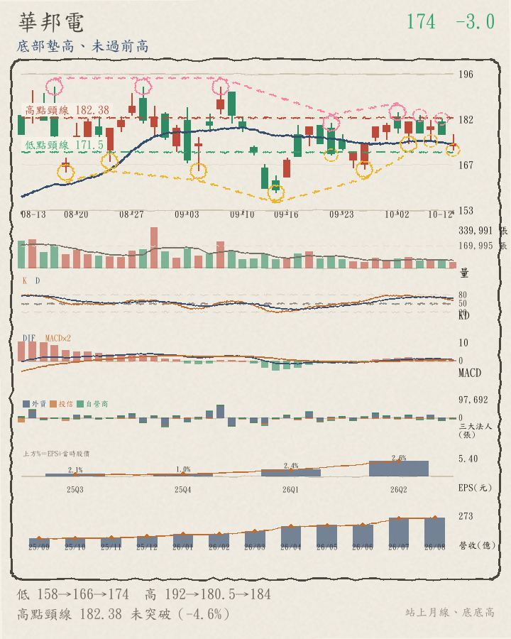
今天收黑、成交量也比平均少、站上月線 173.975，離高點頸線 182.38 還差 4.6%，底部還在墊高（但高點沒同步創高）。
- 月線位置：收盤 174 在月線 173.975 之上；5 日線 177.8 也在月線之上（短均在上）；月線走平或向下、5 日線向上
- 量能：成交量是 20 日均量的 0.56 倍，比 20 日均量少很多
- 關鍵價位：高點頸線 182.38 還沒突破，差 4.6%；最近轉折高點 184（低於 5.4%）；最近轉折低點 174（高於 0.0%）
- 轉折結構：低點 158.5、166、174 墊高 9.8%（底底高），但高點 192、180.5、184 沒有同步創高；還沒確認的轉折低點 10-07 175、10-12 172；還沒確認的轉折高點 10-06 183、10-08 182（圖上虛線小圈）
剛突破前高 成交金額 78.19 億・全榜第 34 名（上市第 30 名）
好條件 2/8：站上月線、頭頭高
不好條件 6/8：今日下跌、相對大盤弱、量增下跌（出貨）、外資賣超、月線下彎、收盤跌破前一日低點
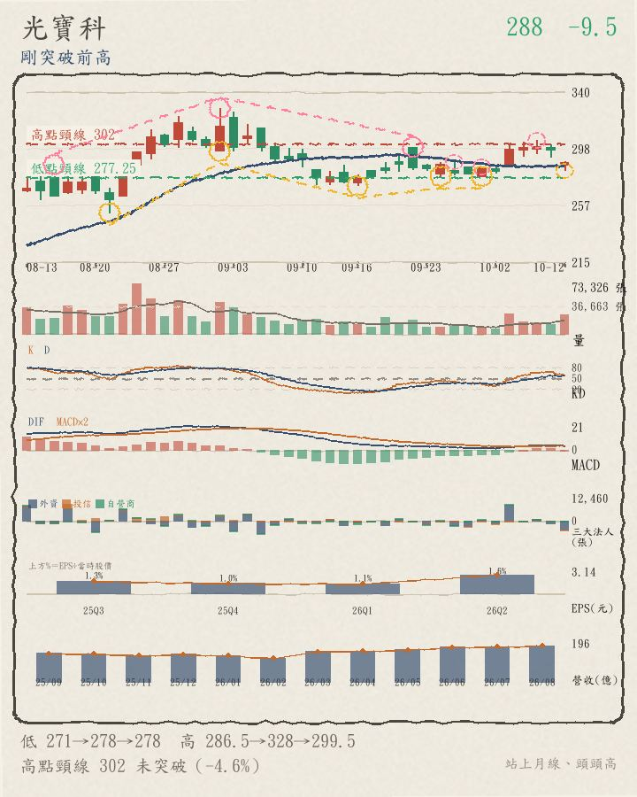
今天帶量收黑、站上月線 285.45，離高點頸線 302 還差 4.6%，高點還在墊高（但底部沒同步墊高）。
- 月線位置：收盤 288 在月線 285.45 之上；5 日線 296.5 也在月線之上（短均在上）；月線走平或向下、5 日線向上
- 量能：成交量是 20 日均量的 1.81 倍，比 20 日均量大不少；收黑卻量增，量價背離
- 關鍵價位：高點頸線 302 還沒突破，差 4.6%；最近轉折高點 299.5（低於 3.8%）；最近轉折低點 278（高於 3.6%）
- 轉折結構：高點 286.5、328、299.5 墊高 1.7%（頭頭高），但低點 271、278、278 沒有同步墊高；還沒確認的轉折低點 10-12 282；還沒確認的轉折高點 10-01 285、10-07 304.5（圖上虛線小圈）
區間或轉弱 成交金額 70.24 億・全榜第 36 名（上市第 31 名）
好條件 3/8：站上月線、月線向上、外資買超
不好條件 2/8：今日下跌、相對大盤弱
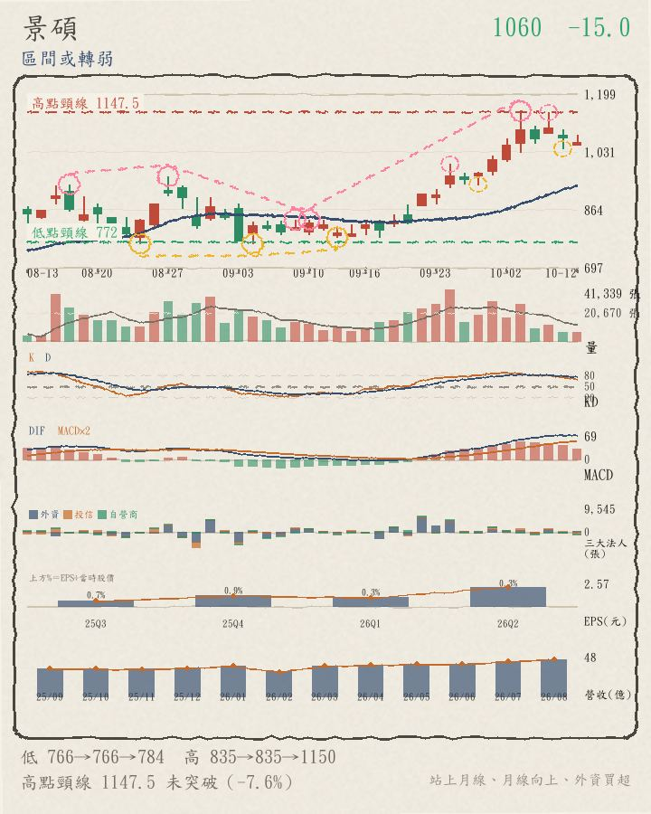
今天收黑、成交量也比平均少、站上月線 934.4，離高點頸線 1147.5 還差 7.6%，轉折還沒走出明顯方向。
- 月線位置：收盤 1060 在月線 934.4 之上；5 日線 1080 也在月線之上（短均在上）；月線向上、5 日線向上
- 量能：成交量是 20 日均量的 0.37 倍，比 20 日均量少很多
- 關鍵價位：高點頸線 1147.5 還沒突破，差 7.6%；最近轉折高點 1150（低於 7.8%）；最近轉折低點 784（高於 35.2%）
- 轉折結構：低點 766、766、784 與高點 835、835、1150 都沒有明顯遞增，屬於區間震盪或轉弱；還沒確認的轉折低點 09-30 937、10-08 1040；還沒確認的轉折高點 09-24 996、10-07 1145（圖上虛線小圈）
剛突破前高 成交金額 69.78 億・全榜第 37 名（上市第 32 名）
好條件 7/8：站上月線、月線向上、頭頭高、突破頸線、相對大盤強、外資買超、量價攻擊（收紅＋大量）
不好條件 0/8：無
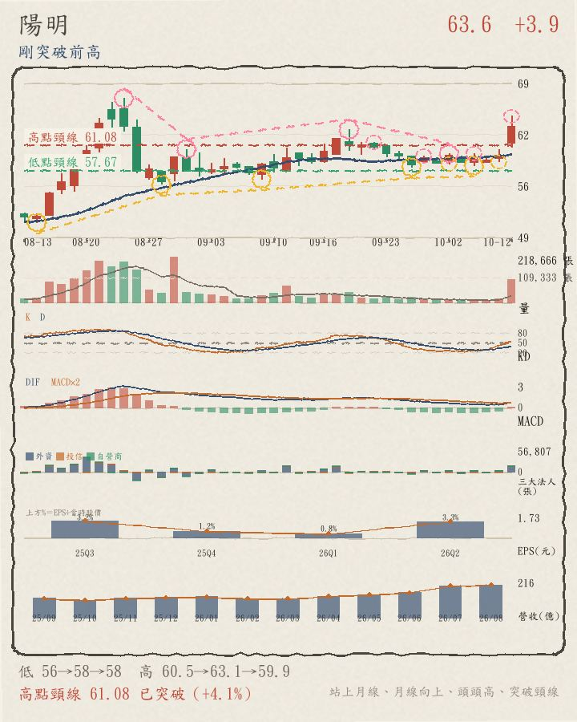
今天帶量收紅、站上月線 59.835，已站上高點頸線 61.08，高點還在墊高（但底部沒同步墊高）。
- 月線位置：收盤 63.6 在月線 59.835 之上；5 日線 60.06 也在月線之上（短均在上）；月線向上、5 日線向上
- 量能：成交量是 20 日均量的 4.14 倍，比 20 日均量大不少；收紅又量增，量價配合
- 關鍵價位：高點頸線 61.08 已站上；最近轉折高點 59.9（高於 6.2%）；最近轉折低點 58.3（高於 9.1%）
- 轉折結構：高點 60.5、63.1、59.9 墊高 8.3%（頭頭高），但低點 56.5、58.1、58.3 沒有同步墊高；還沒確認的轉折低點 10-02 58.5、10-08 58.8；還沒確認的轉折高點 10-06 59.9、10-12 64.9（圖上虛線小圈）
區間或轉弱 成交金額 66.61 億・全榜第 40 名（上市第 33 名）
好條件 3/8：相對大盤強、外資買超、量價攻擊（收紅＋大量）
不好條件 2/8：在月線之下、月線下彎
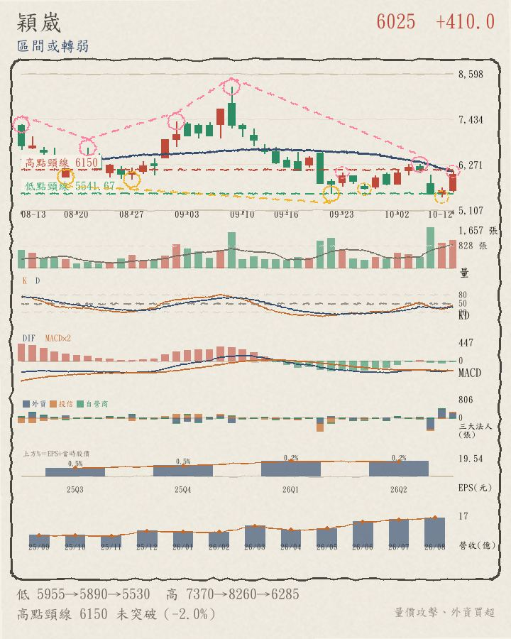
今天帶量收紅、跌破月線 6105.25，離高點頸線 6150 還差 2.0%，轉折還沒走出明顯方向。
- 月線位置：收盤 6025 在月線 6105.25 之下；5 日線 5899 也在月線之下（短均在下）；月線走平或向下、5 日線向上
- 量能：成交量是 20 日均量的 1.79 倍，比 20 日均量大不少；收紅又量增，量價配合
- 關鍵價位：高點頸線 6150 還沒突破，差 2.0%；最近轉折高點 6285（低於 4.1%）；最近轉折低點 5530（高於 9.0%）
- 轉折結構：低點 5955、5890、5530 與高點 7370、8260、6285 都沒有明顯遞增，屬於區間震盪或轉弱；還沒確認的轉折低點 09-29 5650、10-08 5445；還沒確認的轉折高點 09-23 6070、10-12 6095（圖上虛線小圈）
區間或轉弱 成交金額 65.78 億・全榜第 41 名（上市第 34 名）
好條件 2/8：站上月線、相對大盤強
不好條件 2/8：外資賣超、月線下彎
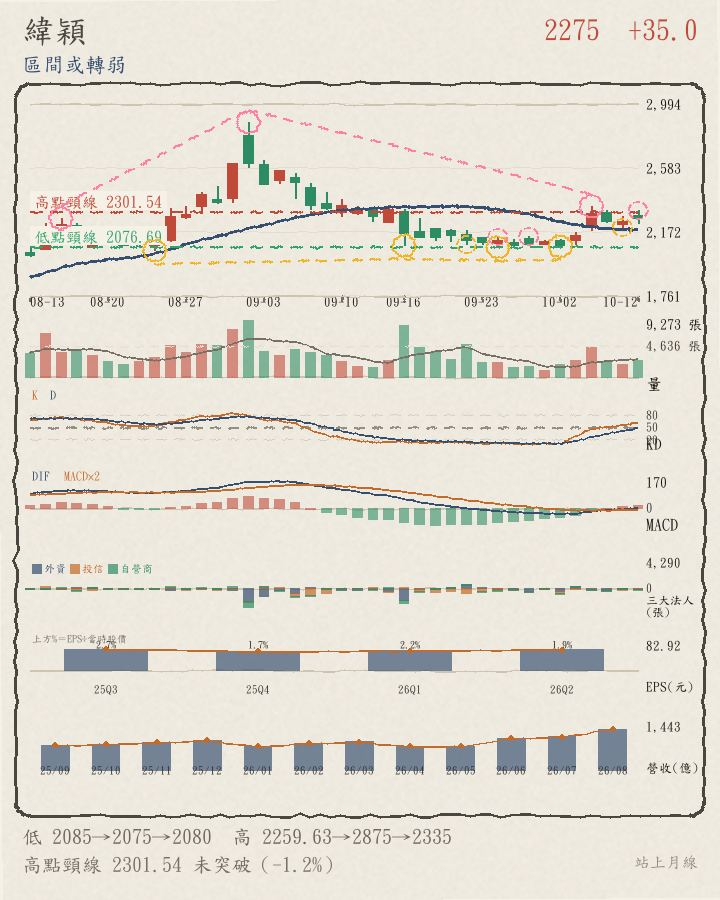
今天收紅、但成交量比平均少、站上月線 2187.25，離高點頸線 2301.54 還差 1.2%，轉折還沒走出明顯方向。
- 月線位置：收盤 2275 在月線 2187.25 之上；5 日線 2239 也在月線之上（短均在上）；月線走平或向下、5 日線向上
- 量能：成交量是 20 日均量的 0.87 倍，比 20 日均量少一些；收紅但量縮，量價背離
- 關鍵價位：高點頸線 2301.54 還沒突破，差 1.2%；最近轉折高點 2335（低於 2.6%）；最近轉折低點 2080（高於 9.4%）
- 轉折結構：低點 2085、2075、2080 與高點 2259.63、2875、2335 都沒有明顯遞增，屬於區間震盪或轉弱；還沒確認的轉折低點 09-22 2090、10-08 2200；還沒確認的轉折高點 09-30 2145、10-12 2310（圖上虛線小圈）
剛突破前高 成交金額 64.29 億・全榜第 43 名（上市第 35 名）
好條件 4/8：站上月線、頭頭高、相對大盤強、量價攻擊（收紅＋大量）
不好條件 2/8：外資賣超、月線下彎
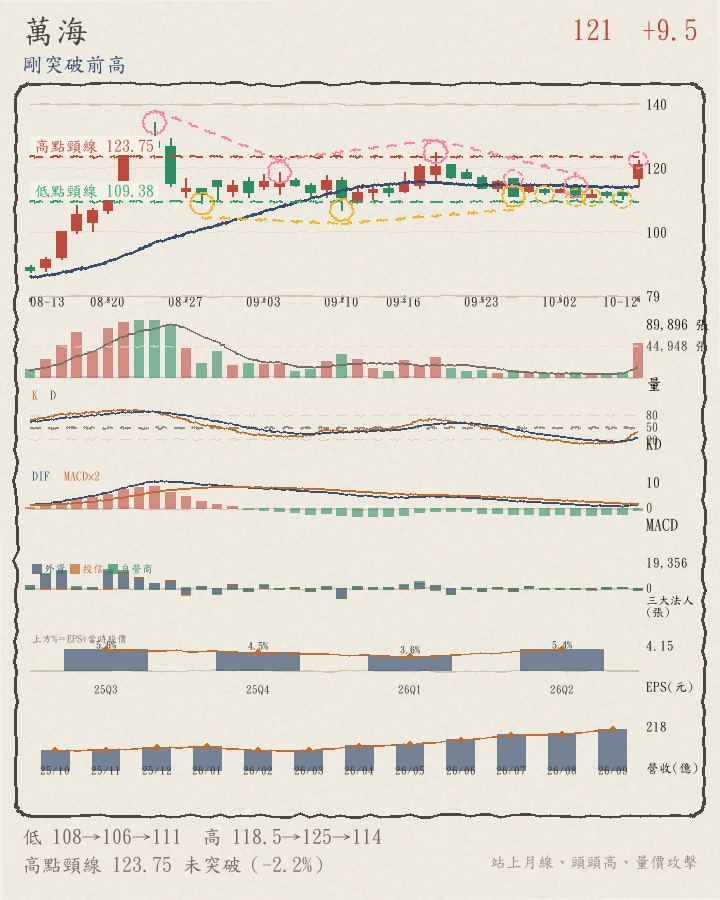
今天帶量收紅、站上月線 114.125，離高點頸線 123.75 還差 2.2%，高點還在墊高（但底部沒同步墊高）。
- 月線位置：收盤 121 在月線 114.125 之上；5 日線 113.2 也在月線之下（短均在下）；月線走平或向下、5 日線走平或向下
- 量能：成交量是 20 日均量的 3.89 倍，比 20 日均量大不少；收紅又量增，量價配合
- 關鍵價位：高點頸線 123.75 還沒突破，差 2.2%；最近轉折高點 114（高於 6.1%）；最近轉折低點 111（高於 9.0%）
- 轉折結構：高點 118.5、125、114 墊高 7.5%（頭頭高），但低點 108.5、106.5、111 沒有同步墊高；還沒確認的轉折低點 10-06 110.5、10-08 110；還沒確認的轉折高點 09-29 116.5、10-12 122.5（圖上虛線小圈）
剛突破前高 成交金額 63.45 億・全榜第 44 名（上市第 36 名）
好條件 3/8：站上月線、月線向上、頭頭高
不好條件 4/8：今日下跌、相對大盤弱、量增下跌（出貨）、外資賣超
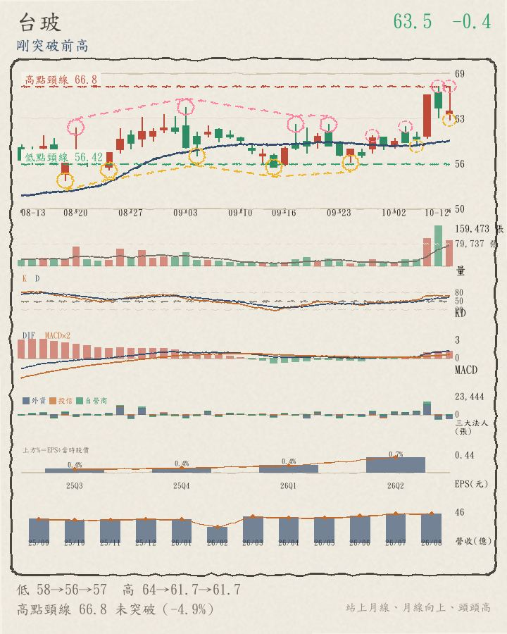
今天帶量收黑、站上月線 59.515，離高點頸線 66.8 還差 4.9%，高點還在墊高（但底部沒同步墊高）。
- 月線位置：收盤 63.5 在月線 59.515 之上；5 日線 62.44 也在月線之上（短均在上）；月線向上、5 日線向上
- 量能：成交量是 20 日均量的 3.48 倍，比 20 日均量大不少；收黑卻量增，量價背離
- 關鍵價位：高點頸線 66.8 還沒突破，差 4.9%；最近轉折高點 61.7（高於 2.9%）；最近轉折低點 56.6（高於 12.2%）
- 轉折結構：高點 64、61.7、61.7 墊高 8.3%（頭頭高），但低點 57.5、56、56.6 沒有同步墊高；還沒確認的轉折低點 10-06 58.8、10-12 62.3；還沒確認的轉折高點 10-08 66.8、10-12 66.8（圖上虛線小圈）
剛突破前高 成交金額 58.65 億・全榜第 46 名（上市第 37 名）
好條件 6/8：站上月線、月線向上、頭頭高、突破頸線、相對大盤強、量價攻擊（收紅＋大量）
不好條件 1/8：外資賣超
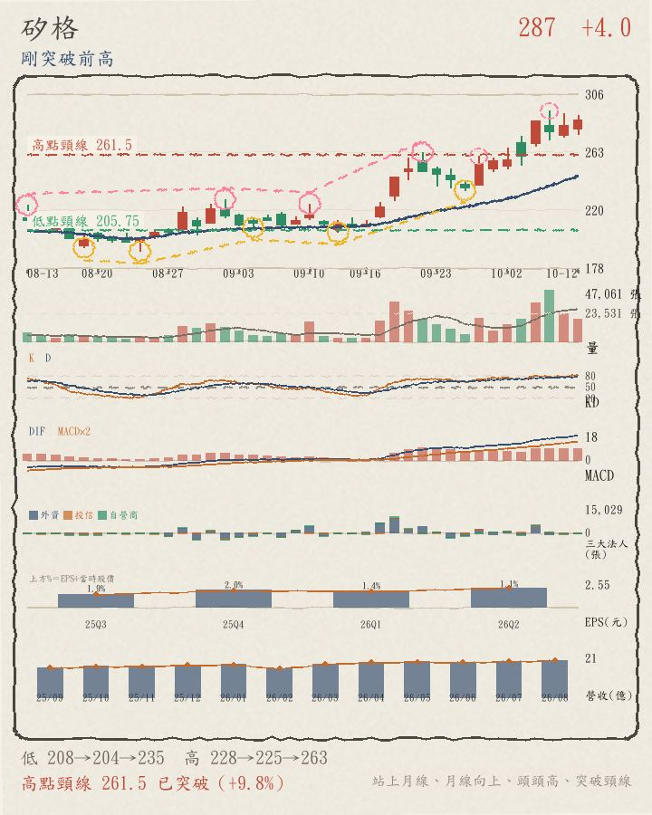
今天帶量收紅、站上月線 245.55，已站上高點頸線 261.5，高點還在墊高（但底部沒同步墊高）。
- 月線位置：收盤 287 在月線 245.55 之上；5 日線 278.8 也在月線之上（短均在上）；月線向上、5 日線向上
- 量能：成交量是 20 日均量的 1.19 倍，比 20 日均量大不少；收紅又量增，量價配合
- 關鍵價位：高點頸線 261.5 已站上；最近轉折高點 263（高於 9.1%）；最近轉折低點 235（高於 22.1%）
- 轉折結構：高點 228、225、263 墊高 11.6%（頭頭高），但低點 207.5、204、235 沒有同步墊高；還沒確認的轉折高點 09-30 260、10-07 293.5（圖上虛線小圈）
區間或轉弱 成交金額 58.53 億・全榜第 47 名（上市第 38 名）
好條件 3/8：站上月線、相對大盤強、外資買超
不好條件 1/8：月線下彎
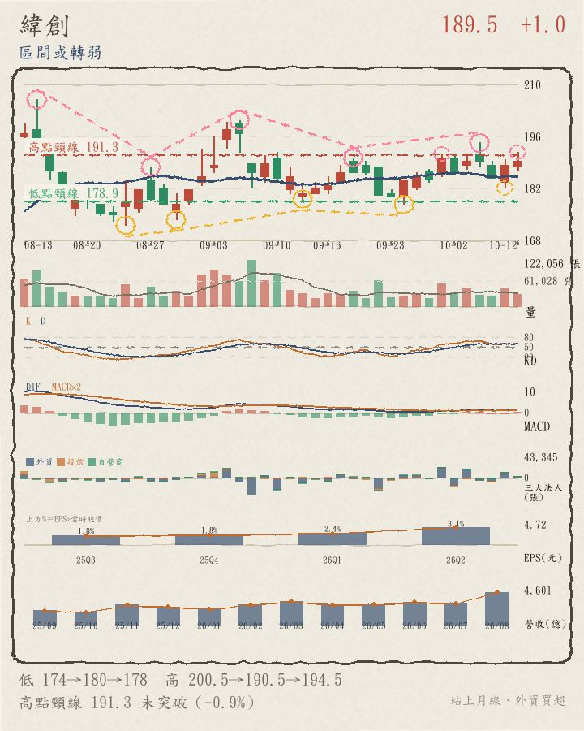
今天收紅、但成交量比平均少、站上月線 185.525，離高點頸線 191.3 還差 0.9%，轉折還沒走出明顯方向。
- 月線位置：收盤 189.5 在月線 185.525 之上；5 日線 188.4 也在月線之上（短均在上）；月線走平或向下、5 日線向上
- 量能：成交量是 20 日均量的 0.78 倍，比 20 日均量少很多；收紅但量縮，量價背離
- 關鍵價位：高點頸線 191.3 還沒突破，差 0.9%；最近轉折高點 194.5（低於 2.6%）；最近轉折低點 178（高於 6.5%）
- 轉折結構：低點 174、179.5、178 與高點 200.5、190.5、194.5 都沒有明顯遞增，屬於區間震盪或轉弱；還沒確認的轉折低點 10-08 182.5；還沒確認的轉折高點 10-01 191.5、10-12 192（圖上虛線小圈）
上升趨勢（底底高＋頭頭高） 成交金額 56.24 億・全榜第 49 名（上市第 39 名）
好條件 4/8：站上月線、月線向上、底底高、頭頭高
不好條件 3/8：今日下跌、相對大盤弱、外資賣超
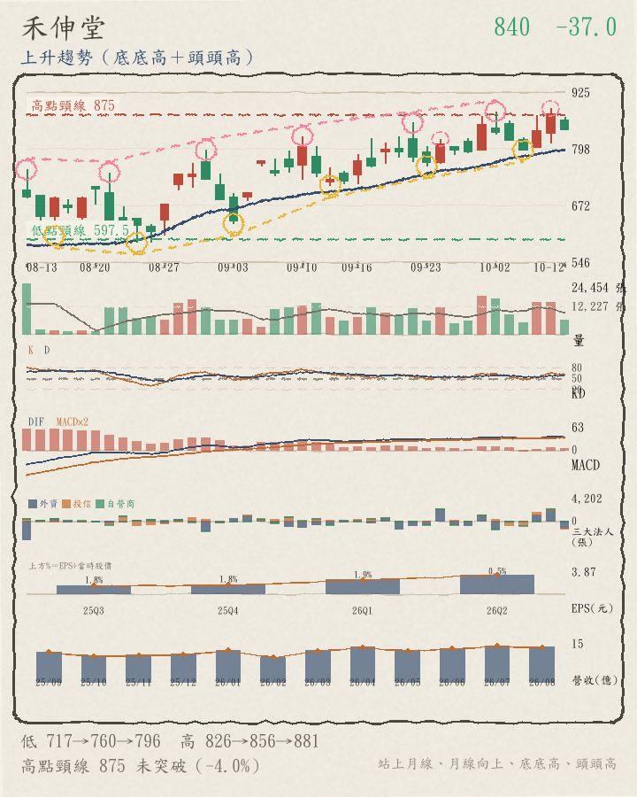
今天收黑、成交量也比平均少、站上月線 796.25，離高點頸線 875 還差 4.0%，轉折結構仍是底底高＋頭頭高。
- 月線位置：收盤 840 在月線 796.25 之上；5 日線 833.8 也在月線之上（短均在上）；月線向上、5 日線向上
- 量能：成交量是 20 日均量的 0.61 倍，比 20 日均量少很多
- 關鍵價位：高點頸線 875 還沒突破，差 4.0%；最近轉折高點 881（低於 4.7%）；最近轉折低點 796（高於 5.5%）
- 轉折結構：低點 717、760、796 一路墊高 11.0%、高點 826、856、881 也一路墊高 6.7%，是底底高＋頭頭高；還沒確認的轉折高點 09-24 820、10-08 888（圖上虛線小圈）
高點墊高、底部不穩 成交金額 55.95 億・全榜第 50 名（上市第 40 名）
好條件 3/8：站上月線、月線向上、頭頭高
不好條件 3/8：今日下跌、相對大盤弱、外資賣超
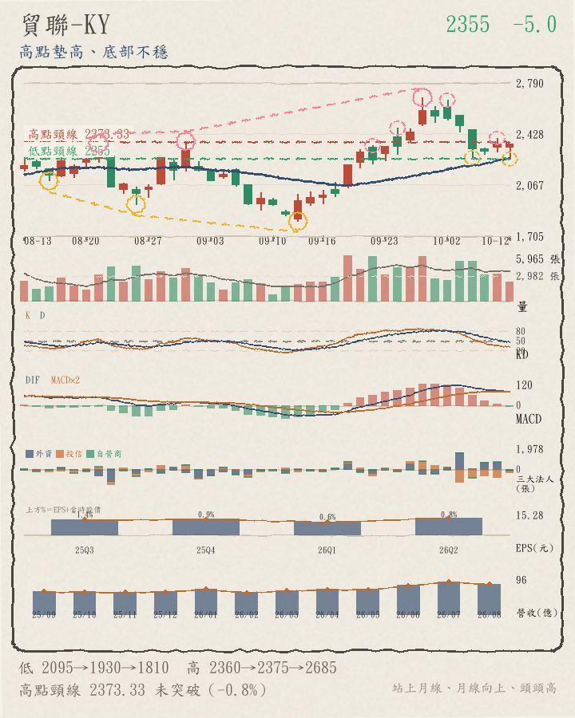
今天收黑、成交量也比平均少、站上月線 2257.75，離高點頸線 2373.33 還差 0.8%，高點還在墊高（但底部沒同步墊高）。
- 月線位置：收盤 2355 在月線 2257.75 之上；5 日線 2368 也在月線之上（短均在上）；月線向上、5 日線走平或向下
- 量能：成交量是 20 日均量的 0.68 倍，比 20 日均量少很多
- 關鍵價位：高點頸線 2373.33 還沒突破，差 0.8%；最近轉折高點 2685（低於 12.3%）；最近轉折低點 1810（高於 30.1%）
- 轉折結構：高點 2360、2375、2685 墊高 13.8%（頭頭高），但低點 2095、1930、1810 沒有同步墊高；還沒確認的轉折低點 10-06 2260、10-12 2250；還沒確認的轉折高點 10-02 2670、10-08 2400（圖上虛線小圈）
剛突破前高 成交金額 53.53 億・全榜第 53 名（上市第 41 名）
好條件 3/8：站上月線、月線向上、頭頭高
不好條件 4/8：今日下跌、相對大盤弱、外資賣超、收盤跌破前一日低點
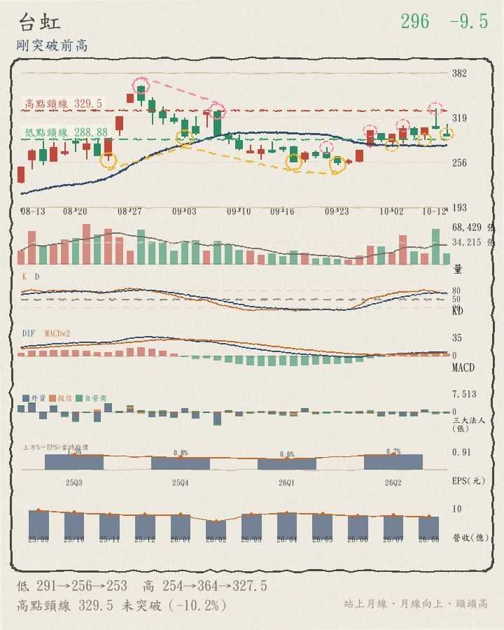
今天收黑、成交量也比平均少、站上月線 279.925，離高點頸線 329.5 還差 10.2%，高點還在墊高（但底部沒同步墊高）。
- 月線位置：收盤 296 在月線 279.925 之上；5 日線 301 也在月線之上（短均在上）；月線向上、5 日線向上
- 量能：成交量是 20 日均量的 0.81 倍，比 20 日均量少很多
- 關鍵價位：高點頸線 329.5 還沒突破，差 10.2%；最近轉折高點 327.5（低於 9.6%）；最近轉折低點 253（高於 17.0%）
- 轉折結構：高點 254、364、327.5 墊高 1.2%（頭頭高），但低點 291、256.5、253 沒有同步墊高；還沒確認的轉折低點 10-07 288、10-12 296；還沒確認的轉折高點 10-05 308、10-08 331.5（圖上虛線小圈）
上升趨勢（底底高＋頭頭高） 成交金額 52.62 億・全榜第 54 名（上市第 42 名）
好條件 8/8：站上月線、月線向上、底底高、頭頭高、突破頸線、相對大盤強、外資買超、量價攻擊（收紅＋大量）
不好條件 0/8：無
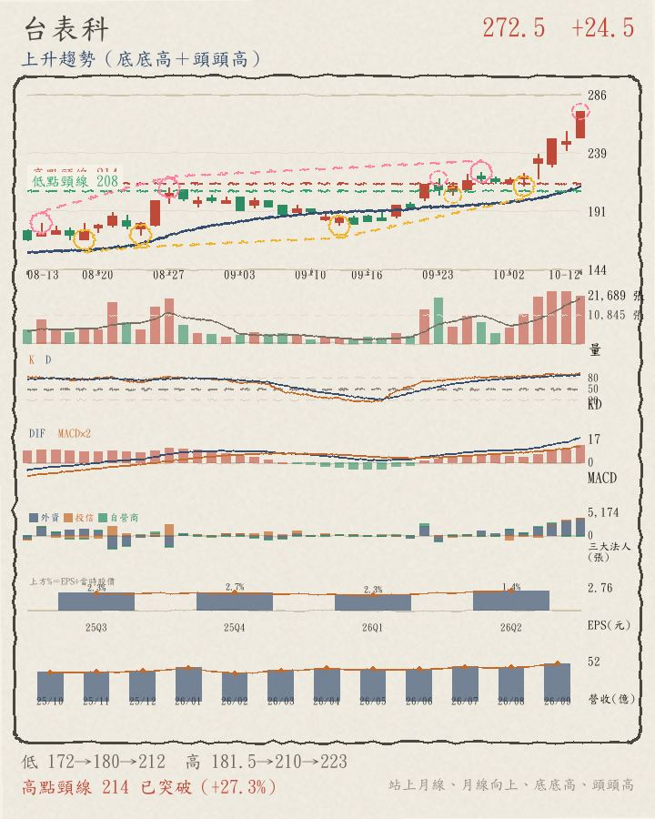
今天帶量收紅、站上月線 211.425，已站上高點頸線 214，轉折結構仍是底底高＋頭頭高。
- 月線位置：收盤 272.5 在月線 211.425 之上；5 日線 245 也在月線之上（短均在上）；月線向上、5 日線向上
- 量能：成交量是 20 日均量的 2.41 倍，比 20 日均量大不少；收紅又量增，量價配合
- 關鍵價位：高點頸線 214 已站上；最近轉折高點 223（高於 22.2%）；最近轉折低點 211.5（高於 28.8%）
- 轉折結構：低點 172、179.5、211.5 一路墊高 23.0%、高點 181.5、210、223 也一路墊高 22.9%，是底底高＋頭頭高；還沒確認的轉折低點 09-24 204.5；還沒確認的轉折高點 09-23 218、10-12 272.5（圖上虛線小圈）
高點墊高、底部不穩 成交金額 51.72 億・全榜第 55 名（上市第 43 名）
好條件 5/8：站上月線、月線向上、頭頭高、相對大盤強、外資買超
不好條件 0/8：無

今天收紅、但成交量比平均少、站上月線 50.237，離高點頸線 55.85 還差 8.1%，高點還在墊高（但底部沒同步墊高）。
- 月線位置：收盤 51.3 在月線 50.237 之上；5 日線 51.64 也在月線之上（短均在上）；月線向上、5 日線走平或向下
- 量能：成交量是 20 日均量的 0.47 倍，比 20 日均量少很多；收紅但量縮，量價背離
- 關鍵價位：高點頸線 55.85 還沒突破，差 8.1%；最近轉折高點 56.2（低於 8.7%）；最近轉折低點 48.55（高於 5.7%）
- 轉折結構：高點 51.6、52.2、56.2 墊高 8.9%（頭頭高），但低點 48、46.25、48.55 沒有同步墊高；還沒確認的轉折低點 10-07 50.7、10-12 49.5；還沒確認的轉折高點 10-01 55.5（圖上虛線小圈）
剛突破前高 成交金額 50.76 億・全榜第 56 名（上市第 44 名）
好條件 6/8：站上月線、頭頭高、突破頸線、相對大盤強、外資買超、量價攻擊（收紅＋大量）
不好條件 1/8：月線下彎
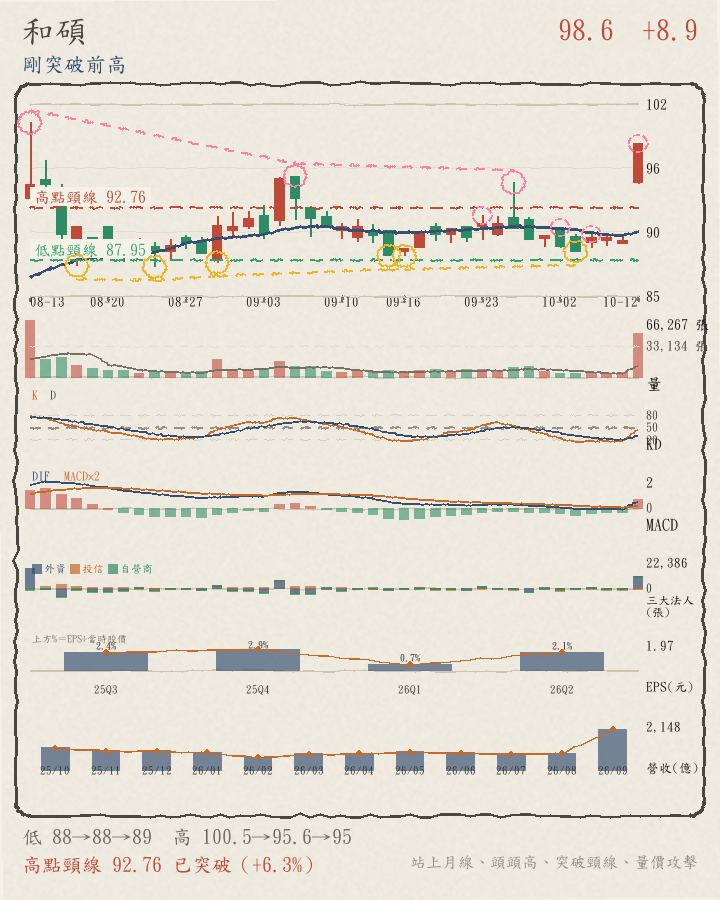
今天帶量收紅、站上月線 90.53，已站上高點頸線 92.76，高點還在墊高（但底部沒同步墊高）。
- 月線位置：收盤 98.6 在月線 90.53 之上；5 日線 91.4 也在月線之上（短均在上）；月線走平或向下、5 日線向上
- 量能：成交量是 20 日均量的 7.29 倍，比 20 日均量大不少；收紅又量增，量價配合
- 關鍵價位：高點頸線 92.76 已站上；最近轉折高點 95（高於 3.8%）；最近轉折低點 88.7（高於 11.2%）
- 轉折結構：高點 100.5、95.6、95 墊高 3.8%（頭頭高），但低點 88.3、88.3、88.7 沒有同步墊高；還沒確認的轉折高點 10-06 90.3、10-12 98.6（圖上虛線小圈）
區間或轉弱 成交金額 50.62 億・全榜第 57 名（上市第 45 名）
好條件 3/8：站上月線、月線向上、突破頸線
不好條件 4/8：今日下跌、相對大盤弱、量增下跌（出貨）、外資賣超
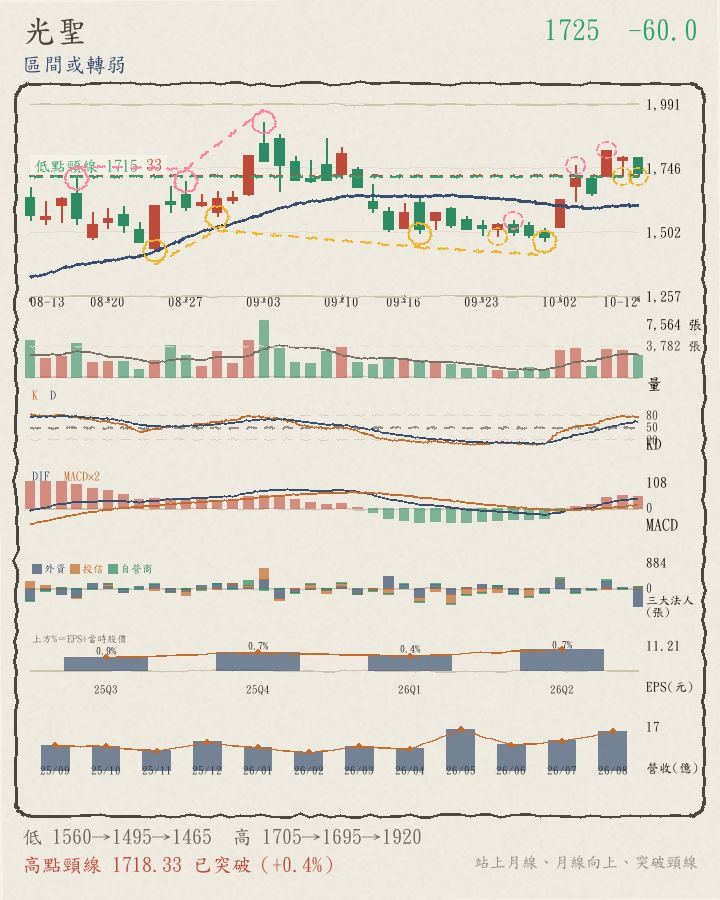
今天帶量收黑、站上月線 1604.25，已站上高點頸線 1718.33，轉折還沒走出明顯方向。
- 月線位置：收盤 1725 在月線 1604.25 之上；5 日線 1736 也在月線之上（短均在上）；月線向上、5 日線向上
- 量能：成交量是 20 日均量的 1.34 倍，比 20 日均量大不少；收黑卻量增，量價背離
- 關鍵價位：高點頸線 1718.33 已站上；最近轉折高點 1920（低於 10.2%）；最近轉折低點 1465（高於 17.7%）
- 轉折結構：低點 1560、1495、1465 與高點 1705、1695、1920 都沒有明顯遞增，屬於區間震盪或轉弱；還沒確認的轉折低點 10-08 1715、10-12 1715；還沒確認的轉折高點 10-05 1755、10-07 1815（圖上虛線小圈）
區間或轉弱 成交金額 49.71 億・全榜第 59 名（上市第 46 名）
好條件 1/8：月線向上
不好條件 6/8：今日下跌、相對大盤弱、在月線之下、量增下跌（出貨）、外資賣超、收盤跌破前一日低點
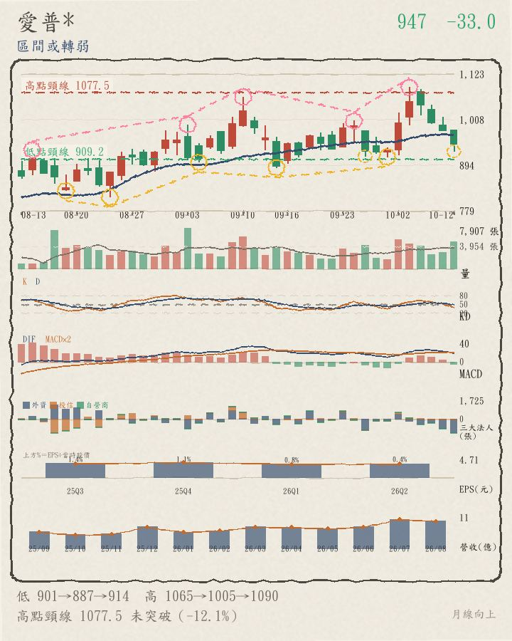
今天帶量收黑、跌破月線 969.25，離高點頸線 1077.5 還差 12.1%，轉折還沒走出明顯方向。
- 月線位置：收盤 947 在月線 969.25 之下；5 日線 1005.4 也在月線之上（短均在上）；月線向上、5 日線向上
- 量能：成交量是 20 日均量的 1.50 倍，比 20 日均量大不少；收黑卻量增，量價背離
- 關鍵價位：高點頸線 1077.5 還沒突破，差 12.1%；最近轉折高點 1090（低於 13.1%）；最近轉折低點 914（高於 3.6%）
- 轉折結構：低點 901、887、914 與高點 1065、1005、1090 都沒有明顯遞增，屬於區間震盪或轉弱；還沒確認的轉折低點 09-29 916、10-12 928（圖上虛線小圈）
高點墊高、底部不穩 成交金額 49.69 億・全榜第 60 名（上市第 47 名）
好條件 3/8：站上月線、月線向上、頭頭高
不好條件 3/8：今日下跌、相對大盤弱、外資賣超
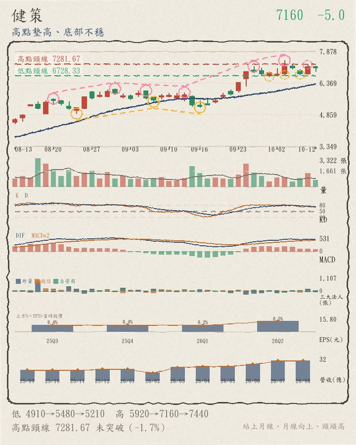
今天收黑、成交量也比平均少、站上月線 6327，離高點頸線 7281.67 還差 1.7%，高點還在墊高（但底部沒同步墊高）。
- 月線位置：收盤 7160 在月線 6327 之上；5 日線 7083 也在月線之上（短均在上）；月線向上、5 日線向上
- 量能：成交量是 20 日均量的 0.60 倍，比 20 日均量少很多
- 關鍵價位：高點頸線 7281.67 還沒突破，差 1.7%；最近轉折高點 7440（低於 3.8%）；最近轉折低點 5210（高於 37.4%）
- 轉折結構：高點 5920、7160、7440 墊高 25.7%（頭頭高），但低點 4910、5480、5210 沒有同步墊高；還沒確認的轉折低點 10-05 6760、10-07 6760；還沒確認的轉折高點 10-08 7245（圖上虛線小圈）
剛突破前高 成交金額 46.07 億・全榜第 62 名（上市第 48 名）
好條件 4/8：站上月線、月線向上、頭頭高、突破頸線
不好條件 4/8：今日下跌、相對大盤弱、量增下跌（出貨）、外資賣超
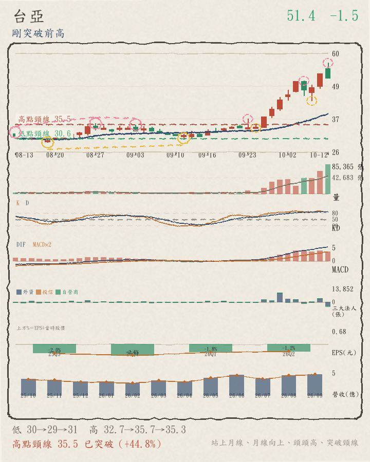
今天帶量收黑、站上月線 39.125，已站上高點頸線 35.5，高點還在墊高（但底部沒同步墊高）。
- 月線位置：收盤 51.4 在月線 39.125 之上；5 日線 50.01 也在月線之上（短均在上）；月線向上、5 日線向上
- 量能：成交量是 20 日均量的 4.93 倍，比 20 日均量大不少；收黑卻量增，量價背離
- 關鍵價位：高點頸線 35.5 已站上；最近轉折高點 35.3（高於 45.6%）；最近轉折低點 30.7（高於 67.4%）
- 轉折結構：高點 32.7、35.7、35.3 墊高 60.3%（頭頭高），但低點 30.5、29.25、30.7 沒有同步墊高；還沒確認的轉折低點 09-24 34.15、10-07 43.5；還沒確認的轉折高點 10-06 50.4、10-12 56.6（圖上虛線小圈）
區間或轉弱 成交金額 44.83 億・全榜第 63 名（上市第 49 名）
好條件 2/8：月線向上、外資買超
不好條件 6/8：跌破前低、今日下跌、相對大盤弱、在月線之下、量增下跌（出貨）、收盤跌破前一日低點
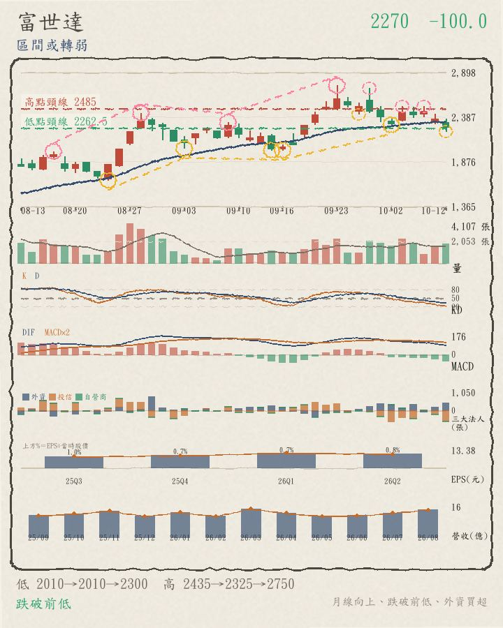
今天帶量收黑、跌破月線 2331.75，跌破前一個轉折低點（高點頸線 2485 還在收盤上方），轉折還沒走出明顯方向。
- 月線位置：收盤 2270 在月線 2331.75 之下；5 日線 2392 也在月線之上（短均在上）；月線向上、5 日線走平或向下
- 量能：成交量是 20 日均量的 1.25 倍，比 20 日均量大不少；收黑卻量增，量價背離
- 關鍵價位：高點頸線 2485 還沒突破、還在收盤上方 8.7%；最近轉折高點 2750（低於 17.5%）；最近轉折低點 2300（低於 1.3%）
- 轉折結構：低點 2010、2010、2300 與高點 2435、2325、2750 都沒有明顯遞增，屬於區間震盪或轉弱；還沒確認的轉折低點 09-29 2420、10-12 2225；還沒確認的轉折高點 10-05 2510、10-07 2510（圖上虛線小圈）
底部墊高、突破前高 成交金額 44.56 億・全榜第 64 名（上市第 50 名）
好條件 5/8：站上月線、月線向上、底底高、頭頭高、突破頸線
不好條件 4/8：今日下跌、相對大盤弱、量增下跌（出貨）、外資賣超
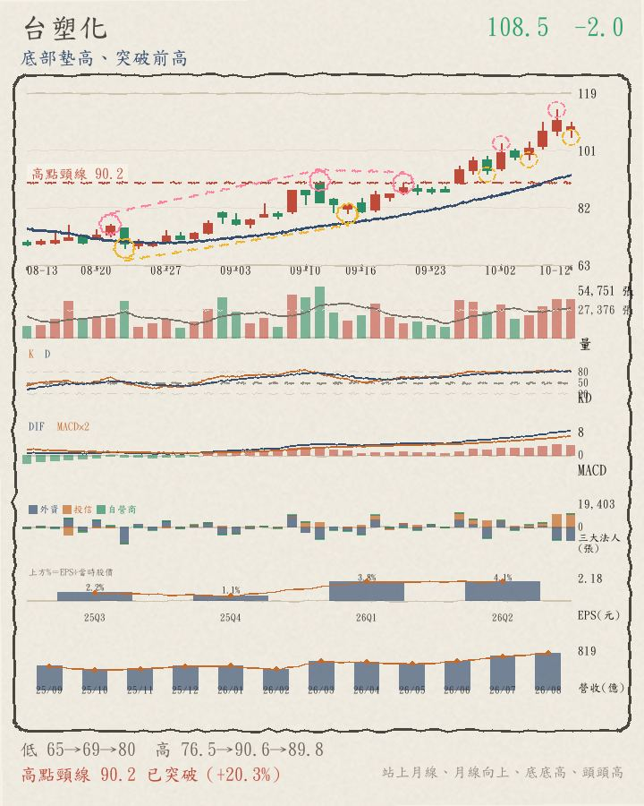
今天帶量收黑、站上月線 92.54，已站上高點頸線 90.2，轉折結構仍是底底高＋頭頭高。
- 月線位置：收盤 108.5 在月線 92.54 之上；5 日線 105.22 也在月線之上（短均在上）；月線向上、5 日線向上
- 量能：成交量是 20 日均量的 1.42 倍，比 20 日均量大不少；收黑卻量增，量價背離
- 關鍵價位：高點頸線 90.2 已站上；最近轉折高點 89.8（高於 20.8%）；最近轉折低點 80（高於 35.6%）
- 轉折結構：低點 65.4、68.6、80 一路墊高 22.3%、高點 76.5、90.6、89.8 也一路墊高 26.9%，是底底高＋頭頭高；還沒確認的轉折低點 10-06 97.7、10-12 105；還沒確認的轉折高點 10-02 103、10-08 114（圖上虛線小圈）
區間或轉弱 成交金額 108.09 億・全榜第 21 名（上櫃第 1 名）
好條件 3/8：站上月線、月線向上、突破頸線
不好條件 3/8：今日下跌、相對大盤弱、外資賣超
今天收黑、成交量也比平均少、站上月線 517.55，已站上高點頸線 487.33，轉折還沒走出明顯方向。
- 月線位置：收盤 580 在月線 517.55 之上；5 日線 591.2 也在月線之上（短均在上）；月線向上、5 日線向上
- 量能：成交量是 20 日均量的 0.68 倍，比 20 日均量少很多
- 關鍵價位：高點頸線 487.33 已站上；最近轉折高點 630（低於 7.9%）；最近轉折低點 482（高於 20.3%）
- 轉折結構：低點 438.5、420、482 與高點 492、478、630 都沒有明顯遞增，屬於區間震盪或轉弱；還沒確認的轉折低點 10-08 566；還沒確認的轉折高點 09-23 518、10-12 604（圖上虛線小圈）
區間或轉弱 成交金額 106.67 億・全榜第 23 名（上櫃第 2 名）
好條件 4/8：站上月線、月線向上、突破頸線、外資買超
不好條件 2/8：今日下跌、相對大盤弱
今天收黑、成交量也比平均少、站上月線 1016.3，已站上高點頸線 1018.75，轉折還沒走出明顯方向。
- 月線位置：收盤 1115 在月線 1016.3 之上；5 日線 1169 也在月線之上（短均在上）；月線向上、5 日線向上
- 量能：成交量是 20 日均量的 0.79 倍，比 20 日均量少很多
- 關鍵價位：高點頸線 1018.75 已站上；最近轉折高點 1260（低於 11.5%）；最近轉折低點 872（高於 27.9%）
- 轉折結構：低點 931、875、872 與高點 1015、1010、1260 都沒有明顯遞增，屬於區間震盪或轉弱；還沒確認的轉折低點 10-06 1145、10-12 1090（圖上虛線小圈）
高點墊高、底部不穩 成交金額 90.52 億・全榜第 29 名（上櫃第 3 名）
好條件 7/8：站上月線、月線向上、頭頭高、突破頸線、相對大盤強、外資買超、量價攻擊（收紅＋大量）
不好條件 0/8：無
今天帶量收紅、站上月線 247.75，已站上高點頸線 245.17，高點還在墊高（但底部沒同步墊高）。
- 月線位置：收盤 272.5 在月線 247.75 之上；5 日線 253.2 也在月線之上（短均在上）；月線向上、5 日線向上
- 量能：成交量是 20 日均量的 2.24 倍，比 20 日均量大不少；收紅又量增，量價配合
- 關鍵價位：高點頸線 245.17 已站上；最近轉折高點 289.5（低於 5.9%）；最近轉折低點 238（高於 14.5%）
- 轉折結構：高點 239.5、251.5、289.5 墊高 20.9%（頭頭高），但低點 220、238、238 沒有同步墊高；還沒確認的轉折低點 10-05 239.5、10-08 243；還沒確認的轉折高點 10-05 249、10-12 277（圖上虛線小圈）
底部墊高、突破前高 成交金額 85.73 億・全榜第 30 名（上櫃第 4 名）
好條件 5/8：站上月線、月線向上、底底高、頭頭高、相對大盤強
不好條件 1/8：外資賣超
今天收紅、但成交量比平均少、站上月線 213.15，離高點頸線 232.8 還差 1.6%，轉折結構仍是底底高＋頭頭高。
- 月線位置：收盤 229 在月線 213.15 之上；5 日線 223.8 也在月線之上（短均在上）；月線向上、5 日線向上
- 量能：成交量是 20 日均量的 0.84 倍，比 20 日均量少很多；收紅但量縮，量價背離
- 關鍵價位：高點頸線 232.8 還沒突破，差 1.6%；最近轉折高點 233（低於 1.7%）；最近轉折低點 211（高於 8.5%）
- 轉折結構：低點 171、208、211 一路墊高 23.4%、高點 203、203、233 也一路墊高 2.1%，是底底高＋頭頭高；還沒確認的轉折高點 10-07 238、10-12 238（圖上虛線小圈）
底部墊高、突破前高 成交金額 70.82 億・全榜第 35 名（上櫃第 5 名）
好條件 5/8：站上月線、月線向上、底底高、頭頭高、突破頸線
不好條件 4/8：今日下跌、相對大盤弱、量增下跌（出貨）、外資賣超
今天帶量收黑、站上月線 137.475，已站上高點頸線 160.25，轉折結構仍是底底高＋頭頭高。
- 月線位置：收盤 166.5 在月線 137.475 之上；5 日線 158.3 也在月線之上（短均在上）；月線向上、5 日線向上
- 量能：成交量是 20 日均量的 1.41 倍，比 20 日均量大不少；收黑卻量增，量價背離
- 關鍵價位：高點頸線 160.25 已站上；最近轉折高點 98.9（高於 68.4%）；最近轉折低點 115（高於 44.8%）
- 轉折結構：低點 81.8、84.8、115 一路墊高 40.6%、高點 163、99.4、98.9 也一路墊高 82.5%，是底底高＋頭頭高；還沒確認的轉折低點 09-30 134、10-06 144；還沒確認的轉折高點 10-02 157.5、10-12 180.5（圖上虛線小圈）
剛突破前高 成交金額 68.4 億・全榜第 38 名（上櫃第 6 名）
好條件 7/8：站上月線、月線向上、頭頭高、突破頸線、相對大盤強、外資買超、量價攻擊（收紅＋大量）
不好條件 0/8：無
今天帶量收紅、站上月線 1325.5，已站上高點頸線 1427.5，高點還在墊高（但底部沒同步墊高）。
- 月線位置：收盤 1675 在月線 1325.5 之上；5 日線 1552 也在月線之上（短均在上）；月線向上、5 日線向上
- 量能：成交量是 20 日均量的 1.97 倍，比 20 日均量大不少；收紅又量增，量價配合
- 關鍵價位：高點頸線 1427.5 已站上；最近轉折高點 1270（高於 31.9%）；最近轉折低點 1180（高於 41.9%）
- 轉折結構：高點 1455、1435、1270 墊高 31.9%（頭頭高），但低點 1185、1180、1180 沒有同步墊高；還沒確認的轉折低點 10-01 1260、10-08 1490；還沒確認的轉折高點 10-06 1590、10-12 1675（圖上虛線小圈）
剛突破前高 成交金額 66.92 億・全榜第 39 名（上櫃第 7 名）
好條件 3/8：站上月線、月線向上、頭頭高
不好條件 3/8：今日下跌、相對大盤弱、外資賣超
今天收黑、成交量也比平均少、站上月線 1518.25，離高點頸線 1807.5 還差 4.0%，高點還在墊高（但底部沒同步墊高）。
- 月線位置：收盤 1735 在月線 1518.25 之上；5 日線 1746 也在月線之上（短均在上）；月線向上、5 日線向上
- 量能：成交量是 20 日均量的 0.45 倍，比 20 日均量少很多
- 關鍵價位：高點頸線 1807.5 還沒突破，差 4.0%；最近轉折高點 1460（高於 18.8%）；最近轉折低點 1275（高於 36.1%）
- 轉折結構：高點 1565、1430、1460 墊高 25.7%（頭頭高），但低點 1395、1295、1275 沒有同步墊高；還沒確認的轉折低點 10-06 1680、10-08 1645；還沒確認的轉折高點 10-05 1780、10-07 1835（圖上虛線小圈）
底部墊高、突破前高 成交金額 64.39 億・全榜第 42 名（上櫃第 8 名）
好條件 4/8：站上月線、月線向上、底底高、頭頭高
不好條件 3/8：今日下跌、相對大盤弱、外資賣超
今天收黑、成交量也比平均少、站上月線 122.1，離高點頸線 137.25 還差 3.1%，轉折結構仍是底底高＋頭頭高。
- 月線位置：收盤 133 在月線 122.1 之上；5 日線 131.2 也在月線之上（短均在上）；月線向上、5 日線向上
- 量能：成交量是 20 日均量的 0.89 倍，比 20 日均量少一些
- 關鍵價位：高點頸線 137.25 還沒突破，差 3.1%；最近轉折高點 129.5（高於 2.7%）；最近轉折低點 113（高於 17.7%）
- 轉折結構：低點 108.571、111、113 一路墊高 4.1%、高點 89.4284、135、129.5 也一路墊高 7.7%，是底底高＋頭頭高；還沒確認的轉折低點 10-01 113.5；還沒確認的轉折高點 10-08 139.5（圖上虛線小圈）
剛突破前高 成交金額 61.86 億・全榜第 45 名（上櫃第 9 名）
好條件 7/8：站上月線、月線向上、頭頭高、突破頸線、相對大盤強、外資買超、量價攻擊（收紅＋大量）
不好條件 0/8：無
今天帶量收紅、站上月線 5506.25，已站上高點頸線 5842.5，高點還在墊高（但底部沒同步墊高）。
- 月線位置：收盤 6130 在月線 5506.25 之上；5 日線 5685 也在月線之上（短均在上）；月線向上、5 日線向上
- 量能：成交量是 20 日均量的 1.54 倍，比 20 日均量大不少；收紅又量增，量價配合
- 關鍵價位：高點頸線 5842.5 已站上；最近轉折高點 5860（高於 4.6%）；最近轉折低點 4995（高於 22.7%）
- 轉折結構：高點 5585、6060、5860 墊高 4.6%（頭頭高），但低點 5365、5090、4995 沒有同步墊高；還沒確認的轉折低點 10-08 5450；還沒確認的轉折高點 10-07 5725、10-12 6130（圖上虛線小圈）
區間或轉弱 成交金額 58.45 億・全榜第 48 名（上櫃第 10 名）
好條件 4/8：站上月線、突破頸線、相對大盤強、量價攻擊（收紅＋大量）
不好條件 2/8：外資賣超、月線下彎
今天帶量收紅、站上月線 3294.75，已站上高點頸線 3140，轉折還沒走出明顯方向。
- 月線位置：收盤 3420 在月線 3294.75 之上；5 日線 3184 也在月線之下（短均在下）；月線走平或向下、5 日線向上
- 量能：成交量是 20 日均量的 1.92 倍，比 20 日均量大不少；收紅又量增，量價配合
- 關鍵價位：高點頸線 3140 已站上；最近轉折高點 3775（低於 9.4%）；最近轉折低點 2960（高於 15.5%）
- 轉折結構：低點 2570、3165、2960 與高點 3100、3935、3775 都沒有明顯遞增，屬於區間震盪或轉弱；還沒確認的轉折低點 09-29 3055、10-08 3000；還沒確認的轉折高點 10-05 3180、10-12 3580（圖上虛線小圈）
剛突破前高 成交金額 54.44 億・全榜第 51 名（上櫃第 11 名）
好條件 3/8：站上月線、頭頭高、相對大盤強
不好條件 2/8：外資賣超、月線下彎
今天收紅、但成交量比平均少、站上月線 2826，離高點頸線 3157.5 還差 4.2%，高點還在墊高（但底部沒同步墊高）。
- 月線位置：收盤 3025 在月線 2826 之上；5 日線 3009 也在月線之上（短均在上）；月線走平或向下、5 日線向上
- 量能：成交量是 20 日均量的 0.62 倍，比 20 日均量少很多；收紅但量縮，量價背離
- 關鍵價位：高點頸線 3157.5 還沒突破，差 4.2%；最近轉折高點 2950（高於 2.5%）；最近轉折低點 2585（高於 17.0%）
- 轉折結構：高點 3600、2930、2950 墊高 8.8%（頭頭高），但低點 1450、2650、2585 沒有同步墊高；還沒確認的轉折低點 10-01 2605、10-12 2890；還沒確認的轉折高點 10-05 3105、10-07 3210（圖上虛線小圈）
剛突破前高 成交金額 53.8 億・全榜第 52 名（上櫃第 12 名）
好條件 4/8：站上月線、月線向上、頭頭高、外資買超
不好條件 3/8：今日下跌、相對大盤弱、量增下跌（出貨）
今天帶量收黑、站上月線 117.55，離高點頸線 154 還差 3.6%，高點還在墊高（但底部沒同步墊高）。
- 月線位置：收盤 148.5 在月線 117.55 之上；5 日線 139.8 也在月線之上（短均在上）；月線向上、5 日線向上
- 量能：成交量是 20 日均量的 6.04 倍，比 20 日均量大不少；收黑卻量增，量價背離
- 關鍵價位：高點頸線 154 還沒突破，差 3.6%；最近轉折高點 112.5（高於 32.0%）；最近轉折低點 107.5（高於 38.1%）
- 轉折結構：高點 126、114.5、112.5 墊高 36.9%（頭頭高），但低點 109、103.5、107.5 沒有同步墊高；還沒確認的轉折高點 10-08 154、10-12 154（圖上虛線小圈）
底部墊高、突破前高 成交金額 50.32 億・全榜第 58 名（上櫃第 13 名）
好條件 7/8：站上月線、月線向上、底底高、頭頭高、突破頸線、相對大盤強、量價攻擊（收紅＋大量）
不好條件 1/8：外資賣超
今天帶量收紅、站上月線 117.191，已站上高點頸線 125，轉折結構仍是底底高＋頭頭高。
- 月線位置：收盤 144 在月線 117.191 之上；5 日線 128.8 也在月線之上（短均在上）；月線向上、5 日線向上
- 量能：成交量是 20 日均量的 5.54 倍，比 20 日均量大不少；收紅又量增，量價配合
- 關鍵價位：高點頸線 125 已站上；最近轉折高點 117.177（高於 22.9%）；最近轉折低點 110（高於 30.9%）
- 轉折結構：低點 100、107.5、110 一路墊高 10.0%、高點 115、123.5、117.177 也一路墊高 29.7%，是底底高＋頭頭高；還沒確認的轉折低點 09-22 111.5、10-06 117；還沒確認的轉折高點 10-05 126.5、10-12 152（圖上虛線小圈）
底部墊高、未過前高 成交金額 47.34 億・全榜第 61 名（上櫃第 14 名）
好條件 3/8：站上月線、月線向上、底底高
不好條件 4/8：今日下跌、相對大盤弱、量增下跌（出貨）、外資賣超
今天帶量收黑、站上月線 461.625，離高點頸線 521 還差 7.6%，底部還在墊高（但高點沒同步創高）。
- 月線位置：收盤 481.5 在月線 461.625 之上；5 日線 492.3 也在月線之上（短均在上）；月線向上、5 日線向上
- 量能：成交量是 20 日均量的 1.05 倍，比 20 日均量大一些；收黑卻量增，量價背離
- 關鍵價位：高點頸線 521 還沒突破，差 7.6%；最近轉折高點 530（低於 9.2%）；最近轉折低點 436.5（高於 10.3%）
- 轉折結構：低點 289、407、436.5 墊高 51.0%（底底高），但高點 496、487、530 沒有同步創高；還沒確認的轉折低點 10-07 475.5、10-12 478；還沒確認的轉折高點 09-30 462、10-08 512（圖上虛線小圈）
高點墊高、底部不穩 成交金額 38.74 億・全榜第 65 名（上櫃第 15 名）
好條件 4/8：站上月線、月線向上、頭頭高、相對大盤強
不好條件 1/8：外資賣超
今天收紅、但成交量比平均少、站上月線 1493.5，離高點頸線 1591.67 還差 3.2%，高點還在墊高（但底部沒同步墊高）。
- 月線位置：收盤 1540 在月線 1493.5 之上；5 日線 1533 也在月線之上（短均在上）；月線向上、5 日線走平或向下
- 量能：成交量是 20 日均量的 0.72 倍，比 20 日均量少很多；收紅但量縮，量價背離
- 關鍵價位：高點頸線 1591.67 還沒突破，差 3.2%；最近轉折高點 1750（低於 12.0%）；最近轉折低點 1480（高於 4.1%）
- 轉折結構：高點 1080、1505、1750 墊高 62.0%（頭頭高），但低點 1300、1240、1480 沒有同步墊高；還沒確認的轉折低點 10-05 1490、10-08 1395；還沒確認的轉折高點 10-05 1575、10-08 1570（圖上虛線小圈）
區間或轉弱 成交金額 38.31 億・全榜第 66 名（上櫃第 16 名）
好條件 2/8：站上月線、月線向上
不好條件 4/8：今日下跌、相對大盤弱、外資賣超、收盤跌破前一日低點
今天收黑、成交量也比平均少、站上月線 119.85，離高點頸線 138.5 還差 10.5%，轉折還沒走出明顯方向。
- 月線位置：收盤 124 在月線 119.85 之上；5 日線 129.5 也在月線之上（短均在上）；月線向上、5 日線向上
- 量能：成交量是 20 日均量的 0.42 倍，比 20 日均量少很多
- 關鍵價位：高點頸線 138.5 還沒突破，差 10.5%；最近轉折高點 140（低於 11.4%）；最近轉折低點 100（高於 24.0%）
- 轉折結構：低點 103.5、104、100 與高點 125、140、140 都沒有明顯遞增，屬於區間震盪或轉弱；還沒確認的轉折低點 10-06 126.5、10-12 123；還沒確認的轉折高點 09-23 125、10-07 135.5（圖上虛線小圈）
區間或轉弱 成交金額 37.76 億・全榜第 67 名（上櫃第 17 名）
好條件 1/8：月線向上
不好條件 5/8：跌破前低、今日下跌、相對大盤弱、在月線之下、外資賣超
今天收黑、成交量也比平均少、跌破月線 2075.75，跌破前一個轉折低點（高點頸線 2180 還在收盤上方），轉折還沒走出明顯方向。
- 月線位置：收盤 2055 在月線 2075.75 之下；5 日線 2073 也在月線之下（短均在下）；月線向上、5 日線走平或向下
- 量能：成交量是 20 日均量的 0.67 倍，比 20 日均量少很多
- 關鍵價位：高點頸線 2180 還沒突破、還在收盤上方 5.7%；最近轉折高點 2350（低於 12.6%）；最近轉折低點 2080（低於 1.2%）
- 轉折結構：低點 1970、1900、2080 與高點 2195、2160、2350 都沒有明顯遞增，屬於區間震盪或轉弱；還沒確認的轉折低點 10-05 2055、10-12 2030；還沒確認的轉折高點 09-30 2215、10-12 2115（圖上虛線小圈）
區間或轉弱 成交金額 37.23 億・全榜第 68 名（上櫃第 18 名）
好條件 2/8：相對大盤強、外資買超
不好條件 2/8：在月線之下、月線下彎
今天收紅、跌破月線 18810，離高點頸線 18340 還差 3.5%，轉折還沒走出明顯方向。
- 月線位置：收盤 17695 在月線 18810 之下；5 日線 18287 也在月線之下（短均在下）；月線走平或向下、5 日線走平或向下
- 量能：成交量是 20 日均量的 0.96 倍，跟 20 日均量差不多
- 關鍵價位：高點頸線 18340 還沒突破，差 3.5%；最近轉折高點 19895（低於 11.1%）；最近轉折低點 17170（高於 3.1%）
- 轉折結構：低點 15930、14600、17170 與高點 19795、21800、19895 都沒有明顯遞增，屬於區間震盪或轉弱；還沒確認的轉折低點 10-02 18355、10-08 15975；還沒確認的轉折高點 10-12 18080（圖上虛線小圈）
區間或轉弱 成交金額 36.35 億・全榜第 69 名（上櫃第 19 名）
好條件 0/8：無
不好條件 8/8：跌破前低、今日下跌、相對大盤弱、在月線之下、量增下跌（出貨）、外資賣超、月線下彎、收盤跌破前一日低點
今天帶量收黑、跌破月線 661.55，跌破前一個轉折低點（高點頸線 677 還在收盤上方），轉折還沒走出明顯方向。
- 月線位置：收盤 602 在月線 661.55 之下；5 日線 652.4 也在月線之下（短均在下）；月線走平或向下、5 日線走平或向下
- 量能：成交量是 20 日均量的 2.32 倍，比 20 日均量大不少；收黑卻量增，量價背離
- 關鍵價位：高點頸線 677 還沒突破、還在收盤上方 11.1%；最近轉折高點 699（低於 13.9%）；最近轉折低點 629（低於 4.3%）
- 轉折結構：低點 647、647、629 與高點 656、850、699 都沒有明顯遞增，屬於區間震盪或轉弱；還沒確認的轉折低點 10-06 645、10-12 601；還沒確認的轉折高點 10-05 688、10-07 693（圖上虛線小圈）
剛突破前高 成交金額 34.21 億・全榜第 70 名（上櫃第 20 名）
好條件 3/8：站上月線、月線向上、頭頭高
不好條件 4/8：今日下跌、相對大盤弱、量增下跌（出貨）、外資賣超
今天帶量收黑、站上月線 478.225，離高點頸線 544.33 還差 6.3%，高點還在墊高（但底部沒同步墊高）。
- 月線位置：收盤 510 在月線 478.225 之上；5 日線 513.6 也在月線之上（短均在上）；月線向上、5 日線向上
- 量能：成交量是 20 日均量的 1.45 倍，比 20 日均量大不少；收黑卻量增，量價背離
- 關鍵價位：高點頸線 544.33 還沒突破，差 6.3%；最近轉折高點 508（高於 0.4%）；最近轉折低點 436（高於 17.0%）
- 轉折結構：高點 560、520、508 墊高 8.7%（頭頭高），但低點 418.5、417、436 沒有同步墊高；還沒確認的轉折低點 10-06 503、10-08 498；還沒確認的轉折高點 10-07 552、10-12 534（圖上虛線小圈）